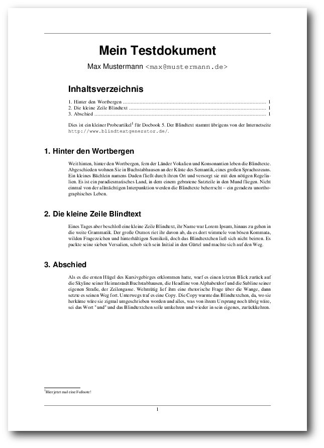
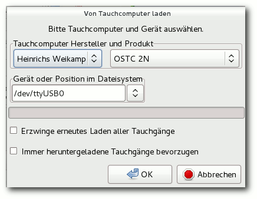

freiesMagazin März 2013
(ISSN 1867-7991)
Topthemen dieser Ausgabe
Fedora 18Das neu erschienene Fedora 18 will den Benutzern wie jedes halbe Jahr die neueste freie Software und die neuesten Technologien bringen, von denen die wichtigsten im Laufe des Artikels erwähnt und, soweit möglich, auch ausprobiert werden. Vorrangig wird auf die Desktopumgebungen GNOME und KDE eingegangen. (weiterlesen)
Einführung in Docbook
Wer publiziert, Software dokumentieren möchte oder sich mit elektronischen Dokumentenformaten beschäftigt, der stößt irgendwann mit Sicherheit auf Docbook. Docbook stammt aus dem Bereich der EDV-Dokumentation und wird überwiegend, aber nicht ausschließlich, dafür verwendet. Docbook ist ausgereift und umfangreich genug, um eine Grundlage für die professionelle Buchproduktion zu sein, wird aber auch für kleinere Projekte verwendet, wie zum Beispiel die Linux-Manpages. Docbook wird mittlerweile vielfältig eingesetzt und es kann damit grundsätzlich plattformunabhängig bzw. -übergreifend gearbeitet werden. (weiterlesen)
Subsurface – Tauchen unter Linux
Subsurface ist ein quelloffenes und kostenloses Programm zur Verwaltung von Tauch-Logbucheinträgen für Linux, MacOS X und Windows. Es erlaubt den direkten Import von Daten aus einer Vielzahl von Tauchcomputermodellen und -programmen. Außerdem bietet es eine ansprechende grafische Aufbereitung der vom Tauchcomputer während des Tauchgangs aufgezeichneten Daten. Eine Fülle weiterer Informationen zu den Tauchgängen können vom Benutzer komfortabel erfasst und verwaltet werden. (weiterlesen)
Zum Index
Inhalt
Linux allgemeinFedora 18
Der Februar im Kernelrückblick
Anleitungen
Firefox-Erweiterungen mit dem Add-on-SDK erstellen – Teil II
Einführung in Docbook
Eine kurze Einführung in Hadoop
Laufzeitanalyse mit gprof
Software
Subsurface – Tauchen unter Linux
Foto-Kartengenerator
Community
Rezension: PC-Netzwerke: Das umfassende Handbuch (6. Auflage)
Rezension: Die Kunst des Vertrauens
Magazin
Editorial
Die Gewinner des sechsten Programmierwettbewerbs
Leserbriefe
Veranstaltungen
Vorschau
Konventionen
Impressum
Zum Index
Editorial
Steam für Linux
Mitte Februar war es soweit: Steam für Linux wurde nach einer ausgiebigen Beta-Phase für alle Linux-Nutzer freigegeben [1]. Wobei „alle“ vielleicht nicht alle meint, da offiziell erst einmal nur Ubuntu unterstützt wird. Als vermutlich meist genutzte Distribution ist dies aber natürlich ein verständlicher Schritt für Valve, der Firma hinter Steam. Als Lockangebot gab es die ersten Tage zahlreiche Spieletitel zum vergünstigten Preis mit 50 % oder gar 75 % Rabatt. Dabei vertreten waren nicht nur Indie-Titel wie Dungeons of Dredmor, Osmos, World of Goo, Aquaria oder Bastion, wie der eine oder andere vielleicht denken möchte. Valve hat einige ihrer eigenen Triple-A-Spiele portiert und bietet diese für Linux an. Darunter u. a. Serious Sam 3, Team Fortress 2, Half-Life oder Counter Strike: Source. Natürlich sollte man immer im Hinterkopf behalten, dass die Nutzungsbestimmungen von Steam alles andere als kundenfreundlich sind. Und es gab auch schon des öfteren Meldungen, dass Spieler nicht mehr auf ihre teuer gekauften Spiele zugreifen konnten, weil Steam den Zugang gesperrt hat. Ein Wiederverkauf ist völlig ausgeschlossen. Dennoch bietet Steam für Linux eine gute Chance, dass viele Nutzer, die Windows als Zweit-OS zum Spielen aufgespielt haben, sich komplett von Microsoft lösen. Mit Windows 8 setzt Microsoft alles daran, Windows-Nutzer zu vergraulen, und da wird es den einen oder anderen sicherlich freuen, dass es Steam auch für Linux gibt. Im Endeffekt muss jeder selbst entscheiden, ob er das Angebot wahrnimmt. Mit den Humble Bundles [2] gibt es für den Spaß zwischendurch eine gute Alternative, die einen auch so lange genug beschäftigen können.Ende des sechsten Programmierwettbewerbs – jetzt wirklich!
Der sechste freiesMagazin-Programmierwettbewerb [3] nahm in den letzten Monaten immer mal wieder Raum im Editorial ein. Jetzt ist aber Schluss damit, denn der Wettbewerb ist zu Ende und die Auswertung wurde durchgeführt. Die Gewinner, Daten und auch ein paar Hintergrundinformationen können Sie in einem Extra-Artikel nachlesen. Und nun wünschen wir Ihnen viel Spaß beim Lesen der neuen Ausgabe. Ihre freiesMagazin-Redaktion Links[1] http://www.pro-linux.de/news/1/19455/steam-fuer-linux-freigegeben.html
[2] http://www.humblebundle.com/
[3] http://www.freiesmagazin.de/sechster_programmierwettbewerb
Das Editorial kommentieren
Zum Index
Fedora 18
von Hans-Joachim Baader Das neu erschienene Fedora 18 will den Benutzern wie jedes halbe Jahr die neueste freie Software und die neuesten Technologien bringen. Der Artikel zeigt die Neuerungen und was es dabei zu beachten gibt. Redaktioneller Hinweis: Der Artikel „Fedora 18“ erschien erstmals bei Pro-Linux [1].Überblick
Fedora 18 [2] enthält eine Vielzahl von Neuerungen, von denen die wichtigsten im Laufe des Artikels erwähnt und, soweit möglich, auch ausprobiert werden. Vorrangig wird auf die Desktopumgebungen GNOME und KDE eingegangen. Wie immer sei angemerkt, dass es sich hier nicht um einen Test der Hardwarekompatibilität handelt. Es ist bekannt, dass Linux mehr Hardware unterstützt als jedes andere Betriebssystem, und das überwiegend bereits im Standard-Lieferumfang. Ein Test spezifischer Hardware wäre zu viel Aufwand für wenig Nutzen. Falls man auf Probleme mit der Hardware stößt, stehen die Webseiten von Fedora zur Lösung bereit. Da eine Erprobung auf realer Hardware nicht das Ziel des Artikels ist, werden für den Artikel zwei identische virtuelle Maschinen, 64 Bit, unter KVM mit jeweils 1 GB RAM verwendet. Außerdem wurde ein Netbook mit 32-Bit-CPU aber funktionierender Grafikbeschleunigung, von Fedora 17 auf 18 aktualisiert.Installation
Fedora kann von DVDs, Live-CDs oder minimalen Bootmedien installiert werden. Natürlich kann man aus einem ISO-Image auch ein USB-Medium für die Installation erstellen. Die Live-CDs, in den Varianten GNOME, KDE, LXDE und Xfce, sind aufgrund ihres geringen Umfangs eher eine Notlösung für die Installation, denn es fehlen dann unter anderem LibreOffice und Übersetzungen. Zwar erfolgt die Installation binnen Minuten, da hierbei offenbar mehr oder weniger nur ein Abbild der CD auf die Platte geschrieben wird, aber für normale, vollständige Installationen sind die DVD oder das minimale Image vorzuziehen, bei dem die eigentliche Distribution über das Netz installiert wird.Bootscreen der DVD.
Die Installation von Fedora erfordert mindestens 786 MB RAM, wie schon in Version 17 (siehe „Fedora 17“, freiesMagazin 08/2012 [3]. Für den Betrieb werden mehr als 1 GB empfohlen, was aber allenfalls für ziemlich alte Rechner zu einem Problem wird. In Fedora 18 wurde das Installationsprogramm Anaconda gründlich überarbeitet und seine Oberfläche völlig neu geschrieben [4]. Dies war der Hauptgrund für die außerordentliche Verzögerung der Freigabe von Fedora 18 um über zwei Monate. Die neue Oberfläche soll einfacher zu benutzen sein, aber dennoch alle Optionen bieten, wenn sie benötigt werden. Bei der Sprachauswahl sollte man gleich die Option „Set keyboard“ aktivieren, sonst muss man die Tastatur später manuell konfigurieren. Danach gelangt man in der neuen Installation zu einer Übersichtsseite. Warum hier alle Texte in Großbuchstaben geschrieben wurden, wissen wohl nur die Entwickler. Auf der Seite sind alle Punkte, die vom Benutzer noch bearbeitet werden müssen, mit einem gelben „Warndreieck“ markiert – als ob es ein Fehler des Benutzers sei, dass diese Punkte noch offen sind. Als erstes muss man das Installationsziel auswählen. Die erkannten Festplatten werden durch ein Icon angezeigt, das allerdings die grundlegende Information vermissen lässt, um welches Gerät (/dev/sda usw.) es sich handelt. Stattdessen zeigen die Entwickler den Modellnamen des Gerätes an. Hier gibt es ein schwerwiegendes Problem. Hat man zwei oder mehr Festplatten desselben Modells verbaut, wie soll man sie unterscheiden? Ein Merkmal wäre der Gerätename, ein anderes die Seriennummer – beides fehlt jedoch. Wenn man plant, ein RAID-System einzurichten, mag das verschmerzbar sein, in anderen Fällen besteht jedoch die Gefahr, dass man die falschen Partitionen überschreibt. Bei genauerer Prüfung stellt sich heraus [5], dass die Entwickler die Platten auch in der falschen Reihenfolge anzeigen, was Fehler geradezu herausfordert. Bevor man die Installation starten kann, muss man die Installationsquelle auswählen. Meist muss man hier nur die Vorgabe bestätigen, jedenfalls wenn man von der DVD installiert. Warum die explizite Auswahl hier forciert wird, obwohl man sie von der Übersichtsseite aus aufrufen kann, wenn man sie braucht, ist nicht nachvollziehbar. Auch die Software-Auswahl sollte man sich noch ansehen. Das sollte man sowieso, wenn man nicht GNOME, sondern eine andere Oberfläche installieren will, aber es ist auch nötig, häufig benötigte Anwendungen wie LibreOffice explizit auszuwählen, sonst werden sie nicht mit installiert, und man muss es später nachholen, was zusätzlichen Aufwand darstellt. Wenn man KDE auswählt, sollte man darauf achten, dass auch Apper installiert wird, ansonsten muss man später seine Software-Updates oder zusätzliche Programme von der Kommandozeile aus installieren.
Zusammenfassung der Installation.
Nach Angaben der Entwickler ist Anaconda in dieser Version noch unvollständig. Jedoch sind die gewohnten Optionen wie die Verschlüsselung der gesamten Festplatte oder einzelner Partitionen, RAID und LVM vorhanden. Auch das Dateisystem Btrfs wird wieder unterstützt, sogar mit seinen spezifischen Funktionen wie Subvolumes. Wer die automatische Partitionierung wählt, erhält eine LVM-Installation mit einer 500 MB großen /boot-Partition und dem Rest als Root-Partition. Die Installation verlief im Test unfallfrei, von den erwähnten Problemen abgesehen. Wer bereits Fedora 17 installiert hat, kann mit dem Programm fedup auf Version 18 aktualisieren. Üblicherweise bezieht man dabei die ca. 1400 zu aktualisierenden Pakete über das Netz, aber auch andere Quellen sind möglich. Das Update funktionierte problemlos, allerdings erst im zweiten Anlauf. Anhand der Logdatei konnte man sehen, was passiert war: Das Update schaufelt ein mehr als 300 MB großes Bootimage nach /boot. Ist nicht genug Platz vorhanden, geht es schief, ohne dass der Benutzer informiert wird. Dies dürfte dem Bugzilla-Fehler #902498 [6] entsprechen.
Bootscreen von Fedora 18.
Beim ersten Booten des installierten Systems kommt das bekannte Einrichtungsprogramm mit der Möglichkeit, Benutzer anzulegen.
Erstellung des ersten Benutzers.
Ausstattung
Der Kernel in Fedora 18 beruht auf Linux 3.7.2. Dazu gesellen sich zahlreiche aktualisierte Softwarepakete. Fedora 18 enthält eine neue Version des NetworkManagers, der die Nutzung von WLAN-Hotspots [7] deutlich erleichtern soll. Als Desktop-Umgebungen stehen in Fedora 18 unter anderem KDE SC 4.9, GNOME 3.6, Xfce 4.10 und Sugar 0.98 zur Verfügung. Außerdem wurden der GNOME-Fork Cinnamon und der GNOME2-Nachfolger Mate aufgenommen. Die von Red Hat entwickelten Schriften „Liberation Fonts“ kommen in einer neuen Version. Avahi, die freie MDNS-Implementation, wird auf Desktops standardmäßig aktiviert. Administratoren finden in Fedora 18 unter anderem erstmals die fehlertolerante und skalierbare NoSQL-Datenbank Riak [8] und Samba 4 [9], das SMB3 und vertrauenswürdige Domänen von FreeIPA unterstützt. Ein Fedora 18-System soll sich auch leicht in eine Active Directory- oder FreeIPA-Domäne integrieren lassen. Außerdem sind jetzt System-Updates offline [10] möglich, indem Pakete, die zuvor im Hintergrund heruntergeladen wurden, beim Neustart des Systems in einem speziellen Update-Modus installiert werden, bevor das reguläre System startet. Dadurch werden inkonsistente Zustände vermieden, die bei Updates im laufenden System vorkommen können. Für Administratoren ist es auch wichtig zu wissen, dass einige Konfigurationsdateien in /etc/sysconfig nicht mehr verwendet werden sollen. Stattdessen werden andere Dateien in /etc benutzt. Einiges hat sich bei der Sicherheit getan. Die Installation unterstützt UEFI Secure Boot. Der Daemon rngd, der dem Kernel-Zufallsgenerator zusätzliche Entropie zuführen soll, wird standardmäßig installiert, aber nicht gestartet. Mit SELinux und virt-sandbox können nun auch Dienste in sicheren Sandkästen ausgeführt werden, auch als Root. Mit der Bibliothek libseccomp können Anwendungen festlegen, welche Systemaufrufe sie ausführen wollen. Qemu und KVM nutzen dies zur Erhöhung ihrer Sicherheit. Die Verwendung von PolicyKit wurde weiter ausgedehnt. Ein neues Kommandozeilenprogramm ssm (System Storage Manager [11]) vereinheitlicht die Verwaltung von Speichergeräten, gleichgültig ob dabei LVM, RAID oder Btrfs zum Einsatz kommen. Das Verzeichnis /tmp wird als tmpfs im RAM realisiert [12], was sich aber ändern lässt. Ändern muss man es aber nur, wenn ein Programm gegen die Konventionen verstößt und große Dateien in /tmp ablegt, statt den Systempfad abzufragen oder als Fallback /var/tmp zu verwenden. Neu ist FedFS [13], ein Mechanismus, mit dem man eine konsistente Sicht auf den Dateibaum von verschiedenen Dateiservern einrichten kann. Es ist allerdings noch im Status einer Vorschau. Firewalld [14] wird anstelle von iptables standardmäßig als Firewall eingesetzt. Dadurch wird die Firewall dynamisch und benötigt für Änderungen keinen Neustart mehr. Der Paketmanager DNF ist erstmals als Alternative zu YUM verfügbar. In einem kurzen Test arbeitete er mindestens genauso schnell wie Yum, dem man bekanntlich bisweilen mehr Geschwindigkeit wünscht, und teilweise auch deutlich schneller. Yum besitzt aber wesentlich mehr Funktionen, vermutlich ist DNF derzeit nur ein Extra. Systemtap, ein umfangreiches Trace-System, wurde auf Version 2 aktualisiert; auch das Trace-System LTTng liegt in Version 2.0 vor.Firewall-Konfiguration.
Für Entwickler gab es zahlreiche Updates der Programmierumgebungen, beispielsweise D und Haskell. Unterstützung für die Programmiersprache Clojure kam neu hinzu. Perl (5.16), Python (3.3), Ruby on Rails (3.2) und PHP wurden aktualisiert. Die Power7-Plattform ppc64p7 wird nun unterstützt. Owncloud ist jetzt in der Distribution enthalten und Terminals können 256 statt nur 8 Farben nutzen. Auch im Bereich Virtualisierung und Cloud wurde Fedora 18 erweitert. OpenShift Origin, eine Platform-as-a-Service-Infrastruktur (PaaS), wurde hinzugefügt. Mit Eucalyptus lassen sich private, Amazon-kompatible Clouds verwalten. Die Plattform OpenStack für Infrastructure-as-a-Service (IaaS) wurde auf die Version „Folsom“ aktualisiert, die alternative IaaS-Plattform Eucalyptus auf Version 3.1. Das Projekt Heat zur Orchestrierung von Cloud-Anwendungen kam hinzu. Virt Live Snapshots machen es möglich, Schnappschüsse von virtuellen Maschinen unter Qemu und libvirt zu machen, ohne die Gastsysteme anzuhalten. oVirt wurde auf Version 3.1 gebracht und enthält jetzt auch grafische Werkzeuge. Fedora 18 startet etwa genauso schnell wie sein Vorgänger. Wie immer ist SELinux eingebunden und aktiviert. Als normaler Benutzer merkt man überhaupt nichts davon, solange die Konfiguration korrekt ist. In Fedora 18 wie auch in der Vorversion trat kein sichtbares Problem im Zusammenhang mit SELinux auf. Für den Fall, dass ein Problem auftritt, sei es nach der Installation von zusätzlicher Software oder anderen Änderungen, steht ein Diagnosewerkzeug zur Verfügung. KDE benötigt in Fedora 18 direkt nach dem Start mit einem geöffneten Terminal-Fenster etwa 420 MB RAM, Gnome dagegen hat sich auf 470 MB aufgebläht, hauptsächlich durch die GNOME-Shell. Bei der Geschwindigkeit lässt sich kein nennenswerter Unterschied zwischen den Desktops feststellen, sofern genug RAM vorhanden ist. Die Angaben zum Speicherverbrauch sind nur als Anhaltswerte zu sehen, die sich je nach Hardware und Messzeitpunkt erheblich unterscheiden können.
GNOME
GNOME 3.6 ist der Standard-Desktop von Fedora 18, wenn man nicht ausdrücklich KDE, Xfce, oder anderes auswählt. Gegenüber GNOME 3.4 ist der Menüpunkt Ausschalten anstelle des als nutzlos kritisierten Suspendieren zurückgekehrt. Die Aktivitätenübersicht der GNOME-Shell besitzt nun einen Gitter-Button in der Startleiste (Dash), mit dem man angeblich schnell zu einzelnen Anwendungen wechseln kann. Schnell ist daran allerdings nichts, weil man dennoch meistens nach der Anwendung suchen muss. Die Eingabe von Suchbegriffen soll durch das Hervorheben der Suchleiste vereinfacht werden.Der Login-Bildschirm von GNOME.
Das Sperren des Bildschirms folgt nun dem Paradigma einer Jalousie, die vor dem Bildschirm heruntergezogen wird, und wurde direkt in die GNOME-Shell eingebaut. Der gesperrte Bildschirm zeigt eine große Uhr, Anpassungsmöglichkeiten fehlen. Der gesperrte Bildschirm erlaubt aber auch das Anhalten und Ändern der Lautstärke, falls Audio abgespielt wird. Das kann man zu Recht kritisch sehen. Überdies werden auch Benachrichtigungen eingeblendet, was allerdings abschaltbar ist. Doch es ist paradox, dass ausgerechnet eine Funktion, bei der es keiner Option bedarf – die Privatsphäre gebietet es, dass keinerlei Benachrichtigungen in Abwesenheit des Benutzers angezeigt werden – eine Option besitzt und auch noch die falsche Standardeinstellung hat, während das GNOME-Team sonst jegliche individuellen Einstellungen verweigert, jedenfalls in der grafischen Oberfläche. Eine der wichtigsten Neuerungen ist ferner die Überarbeitung der Benachrichtigungen. Früher wurden Benachrichtigungen am oberen Bildschirmrand unter der Systemleiste eingeblendet; nun haben sie eine eigene Leiste am unteren Bildschirmrand erhalten, die aber nur eingeblendet wird, wenn man mit der Maus für einen Moment an den unteren Bildschirmrand fährt. Wenn die Leiste eingeblendet wird, überlappt sie sich nicht mit den Bildschirminhalten, sondern schiebt diese nach oben. Die Elemente in der Leiste wurden größer, klarer und verschieben sich nicht. Die Benachrichtigungen selbst können geschlossen werden, und einige davon bieten die Möglichkeit, direkt auf sie zu reagieren, beispielsweise durch Eingabe einer Antwort in ein Instant-Messaging-System. Wenn man mit einer Anwendung im Vollbildmodus arbeitet oder ein Spiel spielt, werden nur wichtige Nachrichten angezeigt, die anderen werden erst später präsentiert. Wie sich diese Änderung in der Praxis bewährt, kann dieser Test nicht aufzeigen.
Desktop von GNOME 3.6 mit Anwendungen.
Der Standard-Webbrowser unter GNOME ist Firefox 18.0, nicht der mit GNOME mitgelieferte. Der Dateimanager Files, ehemals Nautilus, erhielt eine stark verbesserte Suchfunktion, leichten Zugriff auf kürzlich benutzte Dateien, verbesserte Werkzeug- und Seitenleisten, bessere Menüorganisation und Optionen zum Verschieben oder Kopieren an einen ausgewählten Ort. Allerdings wurden auch Funktionen entfernt, die von einigen Benutzern geschätzt wurden. Der Webbrowser Web erhielt eine Übersicht, wie sie auch andere Browser bieten, und einen verbesserten Vollbildmodus. Weitere erwähnenswerte Verbesserungen sind die vollständige Integration von Funktionen zur Barrierefreiheit, also zur Unterstützung von Anwendern, die verschiedene Arten von Behinderungen aufweisen, und die Integration von alternativen Eingabemethoden, wie sie zur Eingabe vieler nichteuropäischer Schriften benötigt werden.
Firefox 18.0 unter GNOME 3.6.
Die GNOME-Shell kann dank Software-Rendering auf jeder Hardware laufen, der Fallback-Modus steht optional aber noch zur Verfügung. Im Gegensatz zu Unity unter Ubuntu 12.10 ist das Software-Rendering aber einigermaßen schnell und durchaus noch benutzbar, doch beim Abspielen von Videos versagt es. Das globale Menü für Anwendungen ist weiterhin nicht mit der Tastatur erreichbar, und Tastenkürzel für die Menüpunkte fehlen. Weiter fehlt es an Möglichkeiten, GNOME nach eigenen Vorstellungen zu konfigurieren. Zum Glück ist es möglich, über Erweiterungen der GNOME-Shell einiges zu ändern, und einige dieser Erweiterungen sind über die Paketverwaltung verfügbar.
Anwendungsübersicht in der GNOME-Shell.
Die neue Anwendung Boxes enttäuscht durch einen gravierenden Mangel an Einstellungen. Virtuelle Maschinen sind komplexe Gebilde mit vielen Optionen, da können die wenigen Optionen, die Boxes bietet, nur einige völlig anspruchslose Fälle abdecken. Ähnlich primitiv ist die Dokumentenverwaltung, die zudem nutzlos ist, wenn man nicht bereit ist, Dokumente in irgendwelche Clouds zu stellen.
KDE
KDE ist in Version 4.9 enthalten, aber jetzt nur noch ein „Spin“ von Fedora. Es gibt eine KDE-Live-CD, aber keine Installations-DVD mehr. Zur Installation verwendet man jetzt die Fedora-Installations-DVD und bei der Software-Auswahl wählt man KDE sowie die benötigten Anwendungen aus. Den Umfang der installierten KDE-Anwendungen bestimmt man damit selbst.Desktop von KDE 4.9.
KDE 4.9 setzt noch mehr auf Qt Quick. Insgesamt halten sich die größeren Änderungen gegenüber KDE 4.8 in Grenzen. Eine Reihe von Verbesserungen gab es im Dateimanager Dolphin und in der Terminal-Emulation Konsole. Viele weitere Anwendungen und Spiele bekamen kleinere neue Funktionen und Verbesserungen. Die Aktivitäten wurden stärker mit Dateien, Fenstern und anderen Ressourcen integriert. Es soll jetzt leichter sein, Dateien und Fenster einer Aktivität zuzuordnen und so die eigenen Arbeitsflächen passender zu organisieren. Die Ordneransicht kann nun Dateien anzeigen, die zu einer Aktivität gehören, und es so erleichtern, die Dateien in sinnvolle Zusammenhänge zu stellen. Private Aktivitäten können verschlüsselt werden. Der Window-Manager KWin erhielt Änderungen, so dass man Fensterregeln für Aktivitäten definieren kann.
Desktop von KDE 4.9 mit Anwendungen.
KDE ist im Prinzip der exakte Gegenpol zu GNOME. Hier sind die traditionellen Bedienelemente unbeschädigt erhalten und es gibt Einstellungsmöglichkeiten bis zum kleinsten Detail. Die Plasma-Oberfläche für Mobilgeräte ist vollständig separat von der Desktop-Variante und kann diese daher auch nicht beeinträchtigen. Die Anwendungen bieten einen großen Funktionsumfang und sind konfigurier- und erweiterbar. Natürlich gibt es bisweilen andere freie Anwendungen, die den KDE-Anwendungen überlegen sind oder von einigen Benutzern bevorzugt werden, aber viele KDE-Anwendungen sind gut und nützlich. Die Kritikpunkte an KDE sind dieselben wie eh und je: KDEPIM wird des öfteren kritisiert, besonders KMail. Da ich selbst noch nie KMail-Benutzer war, kann ich dazu nichts weiter sagen, aber es sieht so aus, als ob die KDEPIM-Entwickler einiges an der Robustheit der Software verbessern müssten, um ihren Ruf wieder herzustellen. Aktivitäten sind trotz aller Verbesserungen in den letzten Versionen etwas, was von vielen nur als unnütze Komplexität angesehen wird, weil sie keinen Nutzen erkennen. Ich dachte, dass man mit Aktivitäten eine Gruppe von Anwendungen gemeinsam starten und stoppen könnte; das könnte wirklich nützlich sein. Tatsächlich sind Aktivitäten, die man einmal definiert hat, immer vorhanden. Man kann sie zwar stoppen, aber ihre Anwendungen laufen weiter. Speicherplatz lässt sich so offenbar nicht sparen. Welchen Nutzen aber haben sie dann, den man mit virtuellen Desktops nicht erzielen könnte? Leider sind derzeit Menüpunkte und Optionen zu Aktivitäten überall in Plasma vorhanden, angefangen mit dem Button oben rechts auf dem Desktop, der sich nicht entfernen lässt. Es sollte eine Möglichkeit geben, alle Optionen auszublenden.
Konqueror.
Ein weiteres Problem werden wohl viele Benutzer schon erlebt haben, die sich an einem frisch installierten KDE einloggen wollten: Man kommt nicht weit, der Desktop stürzt einfach ab. Der Grund ist der, dass standardmäßig zahlreiche Effekte eingeschaltet sind, und je nach Hardware und Grafiktreiber kann da Vieles schiefgehen. Die Lösung besteht darin, sich im „abgesicherten Modus“ einzuloggen und die Effekte abzuschalten. Korrekt wäre, alle Effekte standardmäßig abzuschalten, so wie es beispielsweise Suse Linux Enterprise macht. Wenn ein Benutzer Effekte aktiviert, dann auf eigenes Risiko, und wenn das einen Absturz zur Folge hat, sollte ihm dann klar sein, woran es lag.
Multimedia im Browser und Desktop
Wegen der Softwarepatente in den USA kann Fedora, ebenso wie die meisten anderen Distributionen, nur wenige Medienformate abspielen, da es viele benötigte Codecs nicht mitliefern kann. Wenn man versucht, eine MP3- oder Videodatei abzuspielen, dann bieten die gängigen Player aber die Option an, über die Paketverwaltung nach passenden Plug-ins zu suchen. Damit die Suche in der Paketverwaltung Aussicht auf Erfolg hat, muss man vorher die zusätzlichen Repositories von RPM Fusion eintragen. Das muss man wissen oder durch Suchen herausfinden. Die Repositories kann man eintragen, indem man die Webseite von RPM Fusion [15] besucht. Von dieser kann man Pakete installieren, die die Repositories hinzufügen. Dies gilt für GNOME wie für KDE. Nach dieser Vorbereitung sollten die Player unter GNOME und KDE in der Lage sein, die benötigten Plug-ins selbsttätig zu installieren. Merkwürdigerweise hat Totem aber ein Problem, wenn man ausgerechnet mit der Suche nach einem MP3-Plug-in anfängt und noch keine Codecs installiert sind – diese Suche schlägt fehl. Bei Videoformaten funktioniert es aber. Am schnellsten und einfachsten ist allerdings eine manuelle Installation der GStreamer-Plugins, insbesondere gstreamer-ugly und gstreamer-ffmpeg. Denn wenn man die Plug-ins von Totem installieren lässt, treten, wie schon in der Vorversion, eine Reihe von Merkwürdigkeiten auf:- Nach der Installation muss Totem neu gestartet werden, sonst sieht er die neuen Plug-ins nicht.
- Das Spiel mit Suchen und Installieren muss ggf. mehrmals wiederholt werden, denn das Programm scheint unfähig zu sein, alle benötigten Codecs auf einmal zu ermitteln.
- Zur Installation ist die Eingabe des eigenen Passworts nötig. Trotz korrekter Eingabe schreibt die Dialogbox jedoch „Entschuldigung, das hat nicht geklappt“, nur um dann fortzufahren und die Pakete korrekt zu installieren.
Paketverwaltung und Updates
Wenig hat sich bei der Paketverwaltung getan. Installation bzw. Deinstallation und das Aktualisieren von Paketen sind weiterhin separate Anwendungen, die aber auch von der Paketverwaltung aus aufgerufen werden können. Sie funktionieren normalerweise reibungslos und die Updates, wenn sie auch zahlreich sind, sind dank Delta-RPMs oft erstaunlich klein und schnell installiert. Die Paketverwaltung baut unter GNOME und KDE grundsätzlich auf PackageKit auf. Die Programme – gpk-application 3.6.1 bzw. apper 0.8.0 – sind komfortabel genug. Etwas Vergleichbares wie das Software Center von Ubuntu bietet Fedora jedoch nicht.Installation von Updates in KDE von der Benachrichtigung aus.
Etwas merkwürdig ist, dass man beim ersten Update gefragt wird, ob man der Paketquelle vertraut. Eigentlich sollten die Schlüssel der Standard-Repositories bereits vorinstalliert sein und Fedora sollte seinen eigenen Quellen automatisch vertrauen.
Fazit
Fedora 18 wurde von einigen Benutzern, darunter sogar Alan Cox, als die bisher schlechteste Version bezeichnet, und das mag sogar zutreffen. Allerdings muss man das relativieren. Die Kritik, die beispielsweise hier [5] sehr überzogen wirkt, bezieht sich hauptsächlich auf das neue Anaconda und GNOME. Andere Fehler werden meistens schnell behoben und werden wesentlich seltener, je länger man mit dem Update wartet. Zu Anaconda ist festzuhalten, dass es im Test keine Probleme gab. Er mag stellenweise unvollständig und noch nicht optimal bedienbar sein, kann dann aber so schlecht doch nicht sein. Zudem werden viele Benutzer einfach ein Update mit fedup durchführen und mit Anaconda gar nichts zu tun haben. Mehr als 400 Updates in den ersten fünf Tagen allein in der Standardinstallation dürften einen neuen Rekord darstellen. Es bedeutet aber auch, dass jetzt schon deutlich weniger Probleme auftreten dürften. Das andere Problem ist GNOME, aber dagegen hilft, eine andere Desktopumgebung zu installieren. GNOME mit der GNOME-Shell ist eben nach wie vor Geschmackssache. Manche argumentieren, es sei nur gewöhnungsbedürftig. Dann sei aber die Frage erlaubt, warum man sich an eine Software gewöhnen sollte. Muss es nicht eher umgekehrt so sein, dass sich die Software perfekt an die eigenen Vorstellungen anpassen lassen muss? Grundsätzlich stellt sich auch die Frage, warum die GNOME-Entwickler mit aller Gewalt etwas ändern mussten (ich meine hier das Desktop-Paradigma), das überhaupt keinen Mangel aufwies. Fedora bringt reichliche und häufige Updates, Fedora 18 vielleicht noch mehr als üblich, und ist damit immer aktuell. Doch genau hier liegt auch die größte Schwäche der Distribution: Die Basis ändert sich ständig und es gibt keine Version mit langfristigem Support. Alle sechs Monate ist das Update auf die neueste Version Pflicht. Während das für fortgeschrittene Anwender eine einfache Tätigkeit darstellt, die sie leicht beherrschen, ist es normalen Anwendern einfach nicht zumutbar. Andere Distributionen, insbesondere Ubuntu oder Debian, bieten nicht nur wesentlich längeren Support, sondern ermöglichen auch das Update ohne Unterbrechung des Betriebs. Man könnte nun argumentieren, dass normale Benutzer statt Fedora Red Hat Enterprise Linux oder eine davon abgeleitete Distribution nutzen sollten, die ja weitgehend zu Fedora kompatibel sind. Dagegen spricht nichts, ganz im Gegenteil, aber diese Distributionen sind eben nicht exakt Fedora. Für mich bleibt es dabei, dass Fedora in erster Linie für erfahrene Benutzer geeignet ist, die immer die neueste Software wollen und auch kein Problem mit den Updates haben. Links[1] http://www.pro-linux.de/artikel/2/1611/fedora-18.html
[2] https://fedoraproject.org/wiki/F18_release_announcement
[3] http://www.freiesmagazin.de/freiesMagazin-2012-08
[4] https://fedoraproject.org/wiki/Features/NewInstallerUI
[5] http://www.dedoimedo.com/computers/fedora-18-kde.html
[6] https://bugzilla.redhat.com/show_bug.cgi?id=902498
[7] https://fedoraproject.org/wiki/Features/RealHotspot
[8] https://fedoraproject.org/wiki/Features/Riak
[9] https://fedoraproject.org/wiki/Features/Samba4
[10] https://fedoraproject.org/wiki/Features/OfflineSystemUpdates
[11] http://fedoraproject.org/wiki/Features/SystemStorageManager
[12] http://fedoraproject.org/wiki/Features/tmp-on-tmpfs
[13] http://wiki.linux-nfs.org/wiki/index.php/FedFsUtilsProject
[14] http://fedoraproject.org/wiki/Features/firewalld-default
[15] http://rpmfusion.org/
| Autoreninformation |
| Hans-Joachim Baader (Webseite) befasst sich seit 1993 mit Linux. 1994 schloss er erfolgreich sein Informatikstudium ab, machte die Softwareentwicklung zum Beruf und ist einer der Betreiber von Pro-Linux.de. |
Diesen Artikel kommentieren
Zum Index
Der Februar im Kernelrückblick
von Mathias Menzer Basis aller Distributionen ist der Linux-Kernel, der fortwährend weiterentwickelt wird. Welche Geräte in einem halben Jahr unterstützt werden und welche Funktionen neu hinzukommen, erfährt man, wenn man den aktuellen Entwickler-Kernel im Auge behält.Linux 3.8 Entwicklung
Die bedeutendste Änderung der sechsten Entwicklerversion [1] dürfte wohl das Abschalten des Treibers „samsung-laptop“ in dem Fall sein, dass der Linux-Kernel mittels EFI [2] gestartet wurde. Der Hintergrund hierfür liegt im Bekanntwerden eines Fehlers, durch den einige Laptop-Modelle des Herstellers Samsung nach dem Start eines Linux-Systems unbrauchbar wurden. Zwischenzeitlich wiesen jedoch einige Kernel-Entwickler darauf hin, dass das Problem nicht jener Treiber, sondern die UEFI-Firmware selbst sein und der Fehler daher von Samsung behoben werden müsse [3]. Dass es auch unter Windows möglich ist, ein solches Gerät unbrauchbar zu machen, dürfte ihre These untermauern [4]. Die letzte Entwicklerversion im Reigen hieß -rc7 [5]. Sie hatte lediglich Korrekturen im Gepäck und war daher gut geeignet, den Entwicklungszyklus abzuschließen.Linux 3.8 Release
Nach 70 Tagen Entwicklungszeit – und das über Weihnachten und den Jahreswechsel hinweg – steht Linux 3.8 nun zum Einsatz bereit [6]. Der neue Kernel hat nicht so viele Änderungen aufzuweisen, wie der Vorgänger, er bewegt sich eher in einem normalen Rahmen. Mit als erstes bekannt wurde der Wegfall der Unterstützung für die 386-Prozessoren [7]. Eigentlich war dieser Prozessortyp die Wiege für Linux, da Torvalds seinen Kernel ursprünglich hierfür entwickelte. Doch von Sentimentalität war nicht viel zu spüren und so nahm der den entsprechenden Patch auf. Es steht wieder ein neues Dateisystem zur Verfügung. F2FS ist speziell auf die Anforderungen von Flash-Speichern zugeschnitten, wie sie zum Beispiel in Solid State Drives [8] (SSD) zum Einsatz kommen. Generell existieren bereits mehrere für Flash-Speicher geeignete Dateisysteme wie Logfs oder UBIFS, doch die berücksichtigen nicht den Flash Translation Layer [9], den SSDs als Zwischenschicht zum System nutzen. Dieser optimiert Zugriffe auf die Flash-Speicherelemente auch für herkömmliche Dateisysteme, sodass der jeweilige SSD-Datenträger wie ein ganz normales blockorientiertes Gerät gehandhabt werden kann. F2FS kann mit dieser Zwischenschicht umgehen und ihre Optimierungs- und Schutzfunktionen für die Flash-Speicherbausteine mitnutzen. Auch die altgedienten Dateisysteme wurden mit Verbesserungen bedacht. Ext4 [10] kann nun sehr kleine Dateien direkt in Inodes ablegen. Dort befinden sich normalerweise nur die Metadaten zu Dateien und Verweise auf die Speicherblöcke, in denen die Dateien tatsächlich physikalisch gespeichert sind. Die Inodes sind normalerweise sehr klein – 256 Byte in der Standardeinstellung – doch dieser Platz wird meist nicht vollständig gebraucht. Passt in einen solchen Inode die zugehörige Datei noch mit hinein, so wird nicht nur etwas Speicherplatz gespart, da ein ansonsten 4 Kilobyte großer Block verschwendet werden würde, sondern die Zugriffe auf die Datei erfolgen auch schneller, da die Suche nach dem zugehörigen Speicherblock entfällt. Btrfs [11] ist ein äußerst flexibles und vergleichsweise junges Dateisystem und bringt mit fast jeder Kernel-Version neue Funktionen hervor. Diesmal haben die Entwickler den Austausch physikalischer Datenträger ins Visier genommen. Bislang war es zwar möglich, einen neuen Datenträger in ein btrfs-Dateisystem einzubinden und daraufhin einen anderen wieder zu entfernen, doch nahmen die darauf folgenden Operationen viel Zeit in Anspruch. Mit der neuen Funktion „replace“ wird letzten Endes das Gleiche erreicht, doch arbeitet btrfs hier wesentlich performanter solange keine weiteren Datenträger-Operationen anfallen. Der Austausch des Datenträgers erfolgt im laufenden Betrieb, es ist nicht notwendig irgendwelche Operationen zu stoppen oder gar das Dateisystem auszuhängen. Eine Abfrage zum Status des Austauschs und auch der Abbruch ist über das Kommandozeilen-Tool für btrfs möglich. Die Speicherverwaltung des Kernels wurde um eine Funktion zum Ordnung halten erweitert. „Huge Pages“ (deutsch: „Große Seiten“) sind spezielle Speicherseiten, die größer als die üblichen 4KB-Speicherseiten sind, sie werden als spezielle Funktion von der Speicherverwaltung der CPU bereitgestellt. Diese Huge Pages wurden nun erweitert, um „Zero Pages“ (deutsch: „Null-Seiten“) abbilden zu können, quasi Speicherseiten die vollständig mit Nullen gefüllt sind. Zero Pages werden von Anwendungen genutzt, um Speicherplatz zu reservieren. So kann die Speicherverwaltung letztlich Speicherplatz einsparen, indem einige dieser Seiten nicht zugewiesen werden, sondern stattdessen auf eine bereits existierende Zero Page verwiesen wird. Die „Cgroups“ (Control Groups) sind eine Funktion des Kernels, mittels der die Verteilung von Ressourcen des Systems, wie zum Beispiel Prozessor-Zeit oder Speicher, auf Prozess-Gruppen gesteuert werden kann. Die Cgroups wurden nun erweitert, sodass der Speicher, der zur Verwaltung von Prozessen durch den Kernel benötigt wird, limitiert und abgegrenzt werden kann. Das kann zum einen die Sicherheit des Systems erhöhen, zu anderen die Stabilität, da mit oder ohne Absicht schadhaft geschriebene Programme in ihrem Ressourcenverbrauch wirksam eingeschränkt werden können. Auch die berüchtigten Fork-Bomben [12] sollen hierdurch ihren Schrecken verlieren. NUMA (Non Uniform Memory Access) [13] ist eine Architektur der Speicheranbindung für Multiprozessor-Systeme, die für jeden Prozessor seinen eigenen lokalen Speicher vorsieht. Dieser kann dann jedoch auch von anderen Prozessoren angesprochen werden, wobei natürlich der Zugriff auf den eigenen Speicher schneller erfolgen kann als auf den anderer CPUs. Insofern ist es günstig, wenn Prozesse auf dem Prozessor ausgeführt werden, in dessen Speicher auch die benötigten Daten liegen. Um dies zu optimieren, wurde in Linux 3.8 mit nun die Grundlage gelegt. Detaillierte Regeln, nach denen NUMA dann Prozess- und Speicher-Zuweisung steuert, werden im kommenden Kernel folgen. Eine vollständige Übersicht über alle Neuerungen und Verbesserungen von Linux 3.8 findet sich auch diesmal wieder auf der Seite Linux Kernel Newbies [14]. Spekulationen, dass Linux 3.8 wieder ein Longterm-Kernel werden würde, hat Greg Kroah-Hartman im Übrigen bereits vorzeitig beendet [15]. Er pflege derzeit Linux 3.0 und 3.4 für noch mindestens 2 Jahre, zusätzlich zu den normalen Kernel-Versionen und seiner Tätigkeit bei der Kernelentwicklung. Einen dritten Longterm-Kernel könne er nicht betreuen, ohne noch mehr Haare zu verlieren.Ein D-Bus im Kernel
Seit sieben Jahren schon steht mit D-Bus [16] unter Linux ein System für die Interprozesskommunikation [17] (IPC) zur Verfügung, das mittlerweile von den gängigsten Desktop-Umgebungen und Anwendungen verwendet wird. Doch D-Bus basiert auf einem Daemon. Greg Kroah-Hartman hegt nun Pläne, ein IPC-System in den Linux-Kernel direkt zu implementieren [18]. Er verspricht sich davon, dass die Kommunikation zwischen Prozessen und Systemkomponenten beschleunigt wird, außerdem würde es allen Linux-Anwendungen zur Verfügung stehen, sobald nur der Kernel gestartet ist. Damit hätte es auch die besten Aussichten, zu einem neuen Standard zu werden. Zu D-Bus kompatible Schnittstellen sollen es ermöglichen, das IPC-Framework zu wechseln, ohne dass Desktop-Umgebung oder Anwendung etwas davon mitbekommen. Zwar existiert mit AF-Bus bereits ein IPC-System für den Linux-Kernel, doch der eigne sich nach Ansicht von Kroah-Hartman eher für die „verrückten Linux-Entwickler aus der Automobilbranche“. So findet sich AF-Bus auch im LTSI-Kernel, jedoch wurde seine Aufnahme in den Mainstream-Kernel von der Entwicklergemeinde bisher abgelehnt.Keine Secure-Boot-Schlüssel im Kernel
Mit der Anfrage um die Aufnahme einiger Patches wandte sich der Red-Hat-Entwickler David Howells an Torvalds. Konkret ging es darum, dass der Kernel in die Lage versetzt werden sollte, neue Schlüssel für die Verwendung im Zusammenhang mit Secure Boot automatisch zu importieren [19]. Torvalds lehnte die Aufnahme der Patches erst einmal ab, da ihm die neue Funktion und worauf sie aufbaut nicht gefiel. Unter anderem störte er sich daran, dass die Schlüssel aus PE-Dateien [20] extrahiert werden sollen, weil Microsoft nur diese signiere, der Linux-Kernel aber X.509 [21] unterstütze, welches ein Standard für Zertifikate ist. Das Parsen der PE-Binärdateien solle im Userland geschehen. Auch im weiteren Verlauf der Diskussion zeigte sich Torvalds nicht kompromissbereit. Er glaube nicht, dass sich jemand um von vertrauenswürdigen Stellen signierte Schlüssel schere. Da sich auch weitere Entwickler skeptisch zeigten, scheint es eher unwahrscheinlich, dass eine Schlüsselverwaltung in den Kernel integriert wird, die mit den von der Microsoft-Zertifizierungsstelle für die Signierung vorausgesetzten PE-Binärdateien zurechtkommt. Für Linux bedeutet das im Zusammenhang mit Secure Boot, dass zum Beispiel das Aufwachen des Systems nach dem Ruhezustand, was kein eigentlicher Bootvorgang ist, nicht funktioniert oder Fehlermeldungen erzeugt.Gregs 2012
Sicherlich kann Greg Kroah-Hartman auf vieles im Jahr 2012 zurückblicken. Doch die Linux Foundation interessierte sich insbesondere für seine Tätigkeit als Kernel-Maintainer und hat hier einige Zahlen zusammengefasst [22].Ein Jahr im Leben eines Kernel-Maintainers.
© The Linux Foundation (CC-BY)
So bekam Kroah-Hartman über 32.000 E-Mails pro Monat, die Kernel-Mailing-Liste nicht hinzugerechnet, und mehr als 40.000 E-Mail hat er in 2012 verschickt. Fast 179.000 Zeilen Code hat er selbst geändert, dazu kommen über 31.000 entfernte Zeilen. 595 Commits wurden von ihm akzeptiert und über 7.000 hat er abgesegnet. Links
[1] https://lkml.org/lkml/2013/1/31/593
[2] https://de.wikipedia.org/wiki/Unified_Extensible_Firmware_Interface
[3] http://www.pro-linux.de/news/1/19432/garret-uefi-problem-mit-samsung-laptops-noch-nicht-behoben.html
[4] http://heise.de/-1801269
[5] https://lkml.org/lkml/2013/2/8/470
[6] https://lkml.org/lkml/2013/2/18/476
[7] https://de.wikipedia.org/wiki/Intel_80386
[8] https://de.wikipedia.org/wiki/Solid-State-Drive
[9] https://en.wikipedia.org/wiki/Flash_Translation_Layer#Translation_layers
[10] http://de.wikipedia.org/wiki/Btrfs
[11] https://de.wikipedia.org/wiki/Forkbomb
[12] https://de.wikipedia.org/wiki/Non-Uniform_Memory_Access
[13] http://kernelnewbies.org/Linux_3.8
[14] http://www.kroah.com/log/linux/3.8-is_not_longterm_stable.html
[15] https://de.wikipedia.org/wiki/D-Bus
[16] https://de.wikipedia.org/wiki/Interprozesskommunikation
[17] http://www.pro-linux.de/news/1/19435/aufnahme-von-d-bus-in-den-kernel-geplant.html
[18] http://www.pro-linux.de/news/1/19498/uefi-secure-boot-schluessel-signierung-vorerst-nicht-im-linux-kernel.html
[19] https://de.wikipedia.org/wiki/Portable_Executable
[20] https://de.wikipedia.org/wiki/X.509
[21] https://de.wikipedia.org/wiki/Linux_Foundation
[22] http://www.linuxfoundation.org/news-media/infographics/year-life-kernel-maintainer-2012-greg-kroah-hartman
| Autoreninformation |
| Mathias Menzer (Webseite) wirft gerne einen Blick auf die Kernel-Entwicklung, um mehr über die Funktion von Linux zu erfahren und um seine Mitmenschen mit seltsamen Begriffen und unverständlichen Abkürzungen verwirren zu können. |
Diesen Artikel kommentieren
Zum Index
Firefox-Erweiterungen mit dem Add-on-SDK erstellen – Teil II
von Markus Brenneis Im ersten Teil der Reihe [1] wurde erläutert, wie das Add-on-SDK eingerichtet und ein Symbol zur Add-on-Leiste hinzugefügt wird. Es soll nun mit der Erweiterung möglich sein, den gerade markierten Begriff in Wikipedia nachzuschlagen. Außerdem wird erklärt, wie ein Eintrag im Kontextmenü angelegt wird und wie man seine Erweiterung mit anderen Firefox-Nutzern teilen kann.Ermitteln des ausgewählten Textes
Die an die Erweiterung gestellte Aufgabe umfasst zwei Teilaufgaben: Als erstes muss festgestellt werden, welcher Text gerade markiert ist und anschließend muss der Wikipedia-Artikel in einem neuem Tab geöffnet werden. Um den Inhalt der aktuellen Auswahl zu bekommen, stellt das SDK das Modul selection [2] zur Verfügung. Um das Modul nutzen zu können, muss es zunächst – wie schon vom widget-Modul bekannt – pervar selection = require("sdk/selection");
in die main.js eingebunden werden. Mit der Ende Januar erschienenen
SDK-Version 1.13 hat sich die Syntax von require übrigens ein wenig
verändert [3].
Wegen Änderungen an der SDK-Struktur muss nun sdk/ vor den Modulnamen
geschrieben werden; die alte Syntax (require("selection")) ist aber aus
Kompatibilitätsgründen zur Zeit auch noch gültig.
Die aktuelle Auswahl soll dann ausgelesen werden, wenn das „W“-Widget
angeklickt wird. Dafür wird eine Funktion verwendet, die aufgerufen wird,
wenn das
click-Event [4]
des Widgets ausgelöst wird. Ein erster Ansatz, der die aktuelle Auswahl
selection.text in die
Fehlerkonsole [5]
schreiben soll, könnte so aussehen:
var selection = require("sdk/selection");
var widgets = require("sdk/widget");
var widget = widgets.Widget({
id: 'wikipedia-icon',
label: 'Wikipedia',
content: '<b style="font-family:Times">W</b>',
onClick: function() {
console.log(selection.text);
}
});
Testet man nun den Code mit cfx run (vorher das Laden des SDK per
source bin/active nicht vergessen!), öffnet eine Webseite, markiert Text, klickt
auf das „W“ und schaut in der Fehlerkonsole
(„Extras -> Web-Entwickler -> Fehlerkonsole“)
nach, sieht man aber nur „info: meine-erweiterung: null“.
null bedeutet, dass kein Text markiert ist. Wie kann das sein? Sobald auf
das „W“ geklickt wird, verliert die Webseite – und damit auch die Selektion
– den Fokus und es gibt nun tatsächlich keinen markierten Text mehr.
Das Problem lässt sich lösen, indem sich die Erweiterung immer den zuletzt
markierten Text merkt. Dazu wird das select-Ereignis des
selection-Moduls verwendet:
var widgets = require("sdk/widget");
var widget = widgets.Widget({
id: 'wikipedia-icon',
label: 'Wikipedia',
content: '<b style="font-family:Times">W</b>',
onClick: function() {
console.log(selection.text);
}
});
var selectedText;
function selectionChanged(event) {
selectedText = selection.text;
}
selection.on("select", selectionChanged);
Die Funktion selectionChanged wird jedes Mal aufgerufen, wenn ein anderer
Text markiert wird. Dieser Text wird dann in der Variablen selectedText
gespeichert. Die onClick-Funktion muss jetzt noch in
function selectionChanged(event) {
selectedText = selection.text;
}
selection.on("select", selectionChanged);
console.log(selectedText);
geändert werden. Erneutes Testen zeigt, dass dieser Lösungsansatz wie
gewollt funktioniert.
Das Wort „Mozilla“ wurde markiert und mit einem Klick auf das „W“ öffnet sich die Fehlerkonsole.
Öffnen eines Tabs
Nun soll der zum ausgewählten Text passende Wikipedia-Artikel in einem neuen Tab angezeigt werden. Das dafür nötige Modul heißt tabs [6] und wird mitvar tabs = require("sdk/tabs");
eingebunden. Um einen neuen Tab zu öffnen, wird die Funktion open verwendet:
onClick: function() {
console.log(selectedText);
tabs.open("http://de.wikipedia.org/w/index.php?search=" + selectedText);
}
console.log(selectedText);
tabs.open("http://de.wikipedia.org/w/index.php?search=" + selectedText);
}
Ein Eintrag im Kontextmenü
Damit der Benutzer der Erweiterung mit der Maus nicht immer den „langen“ Weg zum „W“-Symbol zurücklegen muss, soll nun ein Eintrag im Kontextmenü [7] angelegt werden. Das benötigte Modul context-menu [8] wird wie üblich mitvar cm = require("sdk/context-menu");
geladen. Der Code zum Erzeugen des Menüeintrags könnte so aussehen:
cm.Item({
label: "Wikipediaartikel aufrufen",
context: cm.SelectionContext(),
contentScript: 'self.on("click", self.postMessage);',
onMessage: function() {
console.log(selectedText);
tabs.open("http://de.wikipedia.org/w/index.php?search=" + selectedText);
}
});
Die Beschriftung des Menüeintrags ist „Wikipediaartikel aufrufen“ (label)
und der Eintrag wird nur dann angezeigt, wenn auf der angezeigten Seite Text
markiert ist (context).
Um mit der Benutzeroberfläche (also auch
Menüeinträgen) zu kommunizieren, werden sogenannte „Content
Scripts“ [9]
verwendet. Der Sinn der Content-Skripte ist der, dass es, wenn in Firefox in
Zukunft die Benutzeroberfläche, Add-ons und auch Webinhalte in
unterschiedlichen Prozessen ausgeführt werden, nicht mehr möglich sein wird,
dass Skripte des Benutzeroberflächen-Prozesses auf Inhalte der
Add-on-Skripte zugreifen können; deshalb werden diese schon jetzt strikt
getrennt.
Content-Skripte werden in der Regel als separate Dateien angelegt (dazu gibt
es in einem späteren Teil mehr Informationen). Da in diesem Fall das Skript
nur aus einem Befehl besteht, ist es auch legitim, diesen Befehl direkt in
der main.js anzugeben. Das Skript sendet mit self.postMessage eine
(leere) Nachricht an die
Erweiterung, sobald das click-Event ausgelöst
wird. Dann wird die unter onMessage angegebene Funktion aufgerufen, welche
dann auf die bekannte Weise den Wikipediaartikel lädt.
Um doppelten Code zu vermeiden, ist es sinnvoll, den Code zum Anzeigen des
Artikels in eine eigene Funktion zu schreiben:
label: "Wikipediaartikel aufrufen",
context: cm.SelectionContext(),
contentScript: 'self.on("click", self.postMessage);',
onMessage: function() {
console.log(selectedText);
tabs.open("http://de.wikipedia.org/w/index.php?search=" + selectedText);
}
});
function openArticle() {
console.log(selectedText);
tabs.open("http://de.wikipedia.org/w/index.php?search=" + selectedText);
}
cm.Item({
label: "Wikipediaartikel aufrufen",
context: cm.SelectionContext(),
contentScript: 'self.on("click", self.postMessage);',
onMessage: openArticle
});
Die onClick-Eigenschaft des Widgets wird analog angepasst.
console.log(selectedText);
tabs.open("http://de.wikipedia.org/w/index.php?search=" + selectedText);
}
cm.Item({
label: "Wikipediaartikel aufrufen",
context: cm.SelectionContext(),
contentScript: 'self.on("click", self.postMessage);',
onMessage: openArticle
});
Der Menüeintrag „Wikipediaartikel aufrufen“.
Erstellen von XPI-Dateien
Wenn man anderen seine Erweiterung zur Verfügung stellen möchte, gibt man diese in der Regel als installierbare XPI-Datei [10] weiter. Eine solche Datei erzeugt man mit dem Befehl$ cfx xpi
Die XPI-Datei wird dann durch Ziehen in ein Firefox-Fenster installiert.
Nach der Installation sollte die Add-on-Leiste automatisch eingeblendet
werden. Ist dies nicht der Fall, so liegt das daran, dass der Benutzer die
Add-on-Leiste in der Vergangenheit manuell geschlossen hat. Sie kann dann
über „Ansicht -> Symbolleisten -> Add-on-Leiste“ wieder angezeigt werden.
Zusammenfassung und Ausblick
Bisher wurde gezeigt, wie man Widgets in der Add-on-Leiste anzeigt (Modul widget), die aktuelle Auswahl abfragt (selection), Tabs öffnet (tabs) und Einträge im Kontextmenü erzeugt (context-menu). Im nächsten Artikel wird unter anderem gezeigt werden, wie Panels (kleine Pop-Ups) erstellt werden. Die komplette Erweiterung kann als Archiv ffox_addonsdk_2.tar.gz und als installierbare Erweiterung ffox_addonsdk_2.xpi heruntergeladen werden. Links[1] http://www.freiesmagazin.de/freiesMagazin-2013-02
[2] https://addons.mozilla.org/en-US/developers/docs/sdk/latest/modules/sdk/selection.html
[3] https://blog.mozilla.org/addons/2013/01/25/changes-to-require-syntax/
[4] https://addons.mozilla.org/en-US/developers/docs/sdk/latest/modules/sdk/widget.html#click
[5] https://developer.mozilla.org/en-US/docs/Error_Console
[6] https://addons.mozilla.org/en-US/developers/docs/sdk/latest/modules/sdk/tabs.html
[7] https://de.wikipedia.org/wiki/Kontextmenü
[8] https://addons.mozilla.org/en-US/developers/docs/sdk/latest/modules/sdk/context-menu.html
[9] https://addons.mozilla.org/en-US/developers/docs/sdk/latest/dev-guide/guides/content-scripts/index.html
[10] https://de.wikipedia.org/wiki/XPI
| Autoreninformation |
| Markus Brenneis (Webseite) hat 2007 sein erstes Firefox-Add-on geschrieben und 2012 beim Entwickeln der Erweiterung LanguageToolFx erstmals das Add-on-SDK benutzt. |
Diesen Artikel kommentieren
Zum Index
Einführung in Docbook
von Daniel Stender Wer publiziert, Software dokumentieren möchte oder sich mit elektronischen Dokumentenformaten beschäftigt, der stößt irgendwann mit Sicherheit auf Docbook. Docbook stammt aus dem Bereich der EDV-Dokumentation und wird überwiegend, aber nicht ausschließlich, dafür verwendet. Docbook ist ausgereift und umfangreich genug, um eine Grundlage für die professionelle Buchproduktion zu sein (so basiert zum Beispiel die gesamte Produktionskette des Verlages O'Reilly darauf), wird aber auch für kleinere Projekte verwendet, wie zum Beispiel die Linux-Manpages. Docbook wird mittlerweile vielfältig eingesetzt und es kann damit grundsätzlich plattformunabhängig bzw. -übergreifend gearbeitet werden.Hallo, Docbook!
Docbook [1] ist eine auf XML basierende Auszeichnungssprache für verschiedenartige Dokumente. Es umfasst eine ganze Reihe von rein semantisch definierten Tags, mit denen sich die einzelnen Elemente zum Beispiel eines Artikels, wie Überschriften und Textabschnitte, zunächst völlig darstellungsneutral aufnehmen lassen. Docbook-Dateien sind reine Textdateien; in einem weiteren Produktionsschritt lassen sich daraus verschiedene Ausgabeformate wie HTML/XHTML, EPUB [2] und PDF erzeugen. Die Trennung von Masterdatei und daraus bzw. davon gesetztem Dokument wird einigen Lesern bereits von dem Textsatzsystem LaTeX [3] her bekannt sein. Docbook unterscheidet sich davon allerdings dadurch, dass hier die Quelldatei keine direkten Typensatzbefehle enthält, sondern einzelne Text- und Dokumentelemente ausgezeichnet werden, die bei Erzeugen des Ausgabeformates beliebig verwendet werden können. Textabschnitte zum Beispiel, die in der Masterdatei mit <emphasis> gekennzeichnet worden sind, können im Ausgabeformat beliebig gehandhabt, kursiv oder fett gesetzt oder aber auch gar nicht hervorgehoben werden. Die strikte Trennung in Inhalt und Form (Prinzip: „was“ und nicht: „wie“) macht Docbook sehr flexibel. So können zum Beispiel auch verschiedenen Sprachversionen oder auch andere Varianten desselben Textes in eine einzige Masterdatei geschrieben und dann verschiedene Dokumente daraus generiert werden. Dieser Artikel führt in die Benutzung von Docbook 5.0 auf einem typischen Linuxsystem (Ubuntu 12.04 LTS) ein; dabei werden zumindest grundlegende XML-Kenntnisse vorausgesetzt. Als weiterführende Literatur empfiehlt sich der bei O'Reilly im Druck vertriebene „Definitive Guide” zu Docbook 5.0 von Norman Walsh, der als Referenz-Dokumentation mittlerweile auch frei im Netz angeboten wird [4], und zwar zusammen mit seinem Docbook-Quellcode [5]. Empfohlen sei an dieser Stelle auch das sehr ausführliche Handbuch „Docbook-XML – Medienneutrales und plattformunabhängiges Publizieren” von Thomas Schraitle (ISBN 978-3-938626-14-6).Schemata
Docbook wurde zunächst als DTD-Schema für den XML-Vorgänger SGML entwickelt. Ab Version 4.1 wurde daneben auch eine Dokumenttypdefinition (DTD) für XML bereit gestellt. Seit 5.0 ist Docbook ausschließlich in XML umgesetzt, und zwar hauptsächlich in der gegenüber von DTD stark weiterentwickelten XML-Schemasprache Relax NG [6] in Verbindung mit einigen Ergänzungen in Schematron [7]. Die daneben offiziell gepflegten Schemata in den Sprachen DTD und W3C XML Schema (XSD) haben nicht ganz denselben Funktionsumfang wie diese. Die Docbook-Schemata werden mittlerweile vom Docbook Technical Commitee bei OASIS betreut und stehen unter der freien BSD-Lizenz. Die aktuelle Version von Docbook ist 5.0 [8], welche neben Version 4.1 und 4.5 ein offizieller OASIS-Standard ist [9]. Der 4.x-Zweig ist mit der eingefrorenen Version 4.5 abgeschlossen worden und das zukünftige Docbook 5.1 hat mittlerweile das 7. Betarelease erreicht. Auf Debian-basierten APT-Systemen wie Ubuntu sind die älteren, aber noch gebräuchlichen SGML und XML-DTDs bis hoch zu Version 4.5 in den Paketen docbook und docbook-xml verfügbar, während sich die aktuellen Docbook 5.0-Schemata mit dem Paket docbook5-xml bequem installieren lassen. Das Relax NG-Schema (.rng) befindet sich dann zusammen mit seiner Variante in kompakter Syntax (.rnc) im Verzeichnis /usr/share/xml/docbook/rng/5.0, während sich die Schematron-Ergänzungen (docbook.sch), sowie die Konvertierungen in DTD- und XML-Schemata in entsprechenden, parallelen Verzeichnissen vorfinden. Die XML-Schemata lassen sich aber ohne Weiteres auch per Hand von der OASIS-Seite zum Beispiel direkt in das Arbeitsverzeichnis einspielen und von dort aus verwenden.Hello, world!
Das XML einer Docbook-Datei lässt sich grundsätzlich mit jedem beliebigen Texteditor schreiben und bearbeiten. Eine rudimentäre Docbook-Datei sieht nun folgendermaßen aus:<?xml version="1.0" encoding="UTF-8"?>
<article version="5.0" xmlns="http://docbook.org/ns/docbook">
<title>Testdokument</title>
<para>Hello, world!</para>
</article>
In der ersten Zeile steht die für XML übliche Standard-Deklaration,
welche die Datei als XML-Dokument ausweist und die Textcodierung
festlegt. Docbook 5.x hingegen wird in Betrieb genommen, indem man
für eines der gültigen Wurzelelemente davon (hier: article) die
gewünschte Versionsnummer und die für Docbook 5.x vorgesehene URI
als Standard-Namensraum festlegt.
Eine Datei foo.xml (gebräuchlich ist auch die Dateiendung .dbk für
Docbook-Dateien) wie diese lässt sich nun gegenüber des
Docbook-Schemas validieren, zum Beispiel mit xmllint aus dem Paket
libxml2-utils:
<article version="5.0" xmlns="http://docbook.org/ns/docbook">
<title>Testdokument</title>
<para>Hello, world!</para>
</article>
$ xmllint --relaxng /usr/share/xml/docbook/schema/rng/5.0/docbook.rng foo.xml
OASIS empfiehlt im Docbook-Howto [10]
dafür allerdings den Multi-Schema XML Validator (MSV) von
Sun [11], der in Java
implementiert ist:
$ java -jar ~/Downloads/msv/msv.jar /usr/share/xml/docbook/schema/rng/5.0/docbook.rng foo.xml
Sollen modulare Dokumente benutzt werden, bei denen Teilstücke in
die Masterdatei mittels
XInclude eingefügt werden, so muss gegenüber
den Schemata docbookxi.rng/.rnc validiert werden, die sich auch in
docbook/rng/5.0 befinden. Aus einem syntaktisch und strukturell
fehlerfreien, d.h. wohlgeformten und gültigen Docbook-Dokument
können dann in einem weiteren Schritt mit gängigen XML-Tools
verschiedene Ausgabeformate hergestellt werden (siehe weiter unten).
Docbook-Elemente
Docbook 5.0 beschreibt 385 verschiedene Elemente mit entsprechenden Tags, die im Verhältnis zu anderen Elementen im Sinne der Baumstruktur von XML auf unterschiedlichen hierarchischen Ebenen angesiedelt sind. Neben den reinen Steuerungselementen sind diese in die Gruppen Strukturelemente, Blockelemente und Inline-Elemente zusammengefasst. Von den Strukturelementen sind zunächst die Wurzelelemente <set> und <book> (ein <set> enthält mehrere <book>s) zu nennen. Ein Buch (<book>) [12] enthält zunächst einen <info>-Abschnitt, der den Buchtitel trägt und unter anderem den Autorennamen [13] beinhaltet. Es kann mit verschiedenen Komponenten ausgestattet werden, wie z. B. einer Widmung (<dedication>), einem Vorwort (<preface>) und verschiedenen Dingen wie einem Inhaltsverzeichnis (<toc>), Indices (<index>) oder einem Glossar (<glossary>). Es besteht aber vor allem natürlich aus Artikeln (<article>) oder Kapiteln (<chapter>), die Textabschnitte (<para>) enthalten, welche wiederum in verschiedene Abschnitte (u. a. <section>) unterteilt sein können. Blockelemente sind nun diejenigen Elemente, die auf der Ebene von <para> angewendet werden können. Es handelt sich dabei z. B. um Listen, Tabellen und Blockzitate. Die z. B. aus den Büchern von O'Reilly bekannten separaten Hinweise (admonitions) gehören auch hierzu (<caution>, <important>, <tip>). Die Inline-Elemente schließlich sind diejenigen, die im laufenden Text Verwendung finden. Es handelt sich hierbei zum Beispiel um <emphasis>, Abkürzungen, Fußnoten, und Querverweise. Da Docbook aus der Software-Dokumentation stammt, finden sich für diesen Zweck besonders viele nützliche Elemente. Ein <article> kann, wie oben gesehen, auch auch als selbständiges Wurzelelement verwendet werden und kann – ähnlich wie ein Buch – mit verschiedenen Komponenten wie einem Inhaltsverzeichnis, Indices, Glossaren usw. ausgestattet werden [14]. Die Datei docbook_test.xml (aus Gründen der Übersichtlichkeit nur verlinkt) zeigt gegenüber dem obigen „Hello, world!“-Beispiel ein mit Info-Block und verschiedenen Abschnitten versehenes, aufwändigeres Beispiel.Docbook mit Emacs
Es ist unbequem, XML mit einem Editor zu schreiben, der nicht speziell dafür gedacht ist oder nicht zumindest besondere Funktionen dafür bereithält und in Sachen XML-Komfort gibt es große Unterschiede zwischen diesen Programmen. Wer nach freien Lösungen Ausschau hält, stößt recht schnell auf die Möglichkeit, Docbook komfortabel mit Emacs [15] zu edieren, dem gewöhnungsbedürftigen, aber vielseitigen Editor-Schwergewicht. Seit Version 23.2 von GNU Emacs ist nXML [16] der Standard-XML-Modus [17]. Es handelt sich bei nXML um einen sehr leistungsstarken Major-Mode, der neben speziellen Eingabehilfen wie Syntax-Highlighting, Autoeinrückung, Tag-Vervollständigung und Wohlgeformtheits-Überwachung auch eine Echtzeit-Gültigkeitsprüfung für Relax NG-Schemata sowie kontextsensitive Tag-Vorschläge möglich macht. nXML schaltet sich in Emacs automatisch hinzu, sobald Dateien mit den Endungen .xml, .xsl, .rng oder .xthml ediert werden. Die für Ubuntu gepflegten GNU Emacs 23-Pakete beinhalten für nXML verschiedene XML-Schemata (nXML verwendet Relax NG in kompakter Syntax), gegenüber denen automatisch validiert wird. Die im aktuellen Paket auf Ubuntu 12.04 (23.3+1-1ubuntu9) und anderen Distributionen verwendete Docbook-Schemadatei ist allerdings veraltet, denn es handelt sich dabei immer noch um Version 4.2 und ein konformes Docbook 5.0-Dokument wird dementsprechend als ungültig bewertet. Eine einfache Lösung für dieses Problem ist, für die geöffnete Datei ein eigenes, lokales nXML-Schemaregister zu erstellen: Nach der Tastenkombination „Strg“ + „C“ „Strg“ + „S“ „Strg“ + „F“ kann die korrekte Schemadatei eingegeben werden, worauf dann ein Register schemas.xml dafür im aktuellen Arbeitsverzeichnis angelegt wird. Im nXML gibt es mit „Strg“ + „Enter“ eine jeweils kontextsensitive Liste mit allen möglichen Vervollständigungen von Tags und Attributen, sodass bei einem eingegebenen <p dabei unter anderem das Element <para> vorgeschlagen wird, falls es an dieser Stelle gültig ist. Eine andere wichtige Funktion ist das Einfügen von korrespondierenden End-Tags mit „Strg“ + „C“ „Strg“ + „F“. Fehler im Dokument werden rot hervorgehoben [18].GNU Emacs 23 im nXML-Modus beim Bearbeiten einer Docbook-Datei.
Das Element <para> in Zeile 10 wird als Fehler angezeigt, weil ein Textabschnitt innerhalb von <book> nur innerhalb eines <chapter> vorkommen darf, während die Auto-Vervollständigung die an der aufgerufenen Stelle möglichen Elemente <chapter> und <colophon> vorschlägt.
Docbook XSL
Für Docbook gibt es eine umfangreiche Sammlung von Stylesheets für die Herstellung von verschiedenen Ausgabeformaten mittels XSL-Transformationen (XSLT): Docbook XSL. Sie sind ebenfalls weit entwickelt, sehr vielseitig und können neben den Schemata als zweite Hälfte von Docbook angesehen werden. Im Paket docbook-xsl-ns ist für Ubuntu 12.04 eine aktuelle, für Docbook 5 vorgesehene Version 1.76 (letzte Veröffentlichung: 1.78) der Stylesheets bequem verfügbar. Diese befinden sich nach der Installation in verschiedenen Unterverzeichnissen von /usr/share/xml/docbook/stylesheet/docbook-xsl-ns. Brandaktuelle Snapshots von Docbook XSL werden regelmäßig gepackt [19]. Mit Hilfe eines der üblichen XSLT-Prozessoren wie Saxon, Xalan, oder Xsltproc können verschiedene Ausgabeformate wie HTML/XHTML, EPUB oder XSL-FO (als Vorstufe u. a. für PDF-Dateien) aus einem Docbook-Master erzeugt werden. Die Stylesheets liegen im XSLT-Format 1.0 vor, und die XSLT 2.0-Version davon ist bisher rein experimentell. Die Stylesheets sind gut dokumentiert; Bob Staytons „Docbook XSL – The definitive guide” (der auch als generelle Einführung gelesen werden kann) ist frei im Netz verfügbar [20]. Dies gilt auch für Norman Walshs „Reference Documentation“ [21]. Für den Prozessor Saxon (Paket libsaxon-java) gibt es für die Verarbeitung von Docbook spezielle Erweiterungen im Paket docbook-xsl-saxon.PDF erzeugen
Um mit Docbook eine PDF-Datei zu erzeugen, muss nun zunächst aus der Masterdatei mit Hilfe des dafür gedachten Stylesheets eine XSL-FO-Datei hergestellt werden:$ saxon-xslt -o foo.fo foo.xml /usr/share/xml/docbook/stylesheet/docbook-xsl-ns/fo/docbook.xsl
Danach kann die .fo-Datei mit einem FO-Formatierer wie FOP in die
gewünschte PDF-Datei umgewandelt werden:
$ fop foo.fo foo.pdf
Es empfiehlt sich, für die verschiedenen oft ausgeführten
Kommandozeilen-Operationen ein Shellscript oder ein Makefile für die
Benutzung mit GNU Make anzufertigen. Mit dem Tool Dblatex können aus
Docbook PDF-Dateien mit Hilfe von LaTeX auch ohne Docbook XSL
erzeugt werden; dazu müssen allerdings umfangreiche Abhängigkeiten
erfüllt sein bzw. mitgezogen werden.
Parameter manipulieren
Die Voreinstellungen der XSL-Stylesheets lassen sich grundsätzlich auf zwei Arten manipulieren: indem bei Aufruf des XSLT-Prozessoren Parameter an diesen übergeben werden und/oder durch eine separate Anpassungsdatei. Die Anpassungsdatei docbook_test.xsl verändert für die XSL-FO-Ausgabe die Standardwerte für Papiergröße (paper.type) von US Letter auf DIN A4 [22], schaltet die automatische Abschnittszählung (section.autolabel) ein, ändert bei den obersten Abschnittsüberschriften (section.title.level1.properties) die Schriftgröße auf das 1,5-Fache der Brotschrift, und erhöht für diese den oberen Abstand auf 15 pt [23]. Es handelt sich dabei selbst um eine konforme XSLT-Datei, in der alle Elemente dem dafür vorgesehenen Namensraum xsl zugeordnet sind. Dem XSLT-Prozessor kann dieses selbsterstellte Stylesheet dann anstatt der originalen Datei docbook-xsl-ns/fo/docbook.xsl angegeben werden, die von dieser mit xsl:import reimportiert wird. Auf diese Art und Weise lassen sich die Ausgabedateien bis in alle Einzelheiten kontrollieren. Eine aus docbook_test.xml resultierende PDF-Datei.
Das automatisch generierte Inhaltsverzeichnis lässt sich übrigens verhindern, indem man dem Paramater generate.toc die Einstellung article nop übergibt. Eine sehr reichhaltige Sammlung von Docbook-Hacks ist Thomas Schraitles DoCookBook-Projekt [24]. Links
[1] http://www.docbook.org/
[2] https://de.wikipedia.org/wiki/Epub
[3] https://de.wikipedia.org/wiki/LaTeX
[4] http://docbook.org/tdg5/
[5] http://docbook.svn.sourceforge.net/viewvc/docbook/trunk/defguide/en/
[6] https://de.wikipedia.org/wiki/Relax_NG
[7] https://de.wikipedia.org/wiki/Schematron
[8] http://www.docbook.org/xml/5.0/
[9] https://www.oasis-open.org/standards#dbv5.0
[10] http://docbook.org/docs/howto/
[11] http://java.net/downloads/msv/releases/
[12] http://www.docbook.org/tdg5/en/html/book.html
[13] http://www.docbook.org/tdg5/en/html/info.html
[14] http://www.docbook.org/tdg5/en/html/article.html
[15] https://de.wikipedia.org/wiki/Emacs
[16] http://www.thaiopensource.com/nxml-mode/
[17] http://ergoemacs.org/emacs/emacs23.2_features.html
[18] http://infohost.nmt.edu/tcc/help/pubs/nxml/emacs-commands.html
[19] http://snapshots.docbook.org/
[20] http://www.sagehill.net/docbookxsl/
[21] http://docbook.sourceforge.net/release/xsl/current/doc/reference.html
[22] http://docbook.sourceforge.net/release/xsl/current/doc/fo/paper.type.html
[23] http://www.sagehill.net/docbookxsl/TitleFontSizes.html
[24] http://doccookbook.sourceforge.net/
| Autoreninformation |
| Daniel Stender (Webseite) hat einen Magister in Indologie, ist Debian-Maintainer und entwickelt im Bereich Digital humanities. |
Diesen Artikel kommentieren
Zum Index
Eine kurze Einführung in Hadoop
von Jens Dörpinghaus Mit Hilfe von Hadoop können Anwendungen entwickelt werden, die auf großen Datenmengen effektiv arbeiten. Dieser Artikel soll eine erste thematische Einführung geben und eine kleine Beispielanwendung für MapReduce in Java vorstellen. Grundkenntnisse in Java werden für diesen Teil vorausgesetzt.Hadoop im Umfeld von Big Data
Wenn es darum geht, große Datenmengen zu verarbeiten (das englische Schlagwort dazu lautet „Big Data“) scheinen heutzutage keine Grenzen mehr gesetzt zu sein. Doch das ist natürlich nicht ganz richtig. Datenmengen, die etliche Terabyte erreichen, können meist ohne größere Probleme auf verbundenen Datenbank- und Rechnersystemen in akzeptabler Geschwindigkeit verarbeitet werden. Doch viele Firmen und Forschungseinrichtungen verarbeiten schon wesentlich größere Datenmengen. Zu nennen ist hier beispielsweise Google, das einen riesigen Index von Suchbegriffen und Webseiten speichert. Niemand möchte aber allzu lange auf seine Suchergebnisse warten und so ist es kein Wunder, dass Hadoop [1] im Umfeld von Google entwickelt wurde. Hadoop stellt für die schnelle und parallele Verarbeitung vieler, oft komplexer Anfragen über große Datenmengen auf Computerclustern verschiedene, in Java geschriebene Anwendungen und Bibliotheken als Framework zur Verfügung, die es ermöglichen, Lösungen in diesem Bereich zu entwickeln. Zu nennen ist hier etwa das Hadoop Distributed File System (HDFS [2]), dass verteilt auf verschiedenen Rechnern läuft und sich aus dem seit 2003 entwickelten Google Distributed File System (GFS [3]) entwickelt hat. HDFS wurde entwickelt, um sehr große Dateien zu speichern und, auch unter etwaigen Anfangsverzögerungen, einen großen Durchsatz beim Lesen der Dateien zu erreichen. Außerdem wurde Wert darauf gelegt, dass das Dateisystem auf normaler Hardware ausfallsicher läuft. Dies sind allerdings auch die größten Defizite: So ist ein zügiger Zugriff auf die Daten nicht immer gewährleistet und das Dateisystem wird ineffizient bei vielen kleinen Dateien. Für weitere Informationen sei auf das Buch „Hadoop: The Definitive Guide“ [4] von Tom White verwiesen. Weiter kommt Hadoop mit zwei Datenbanken für große Datenmengen (HBase und Hive) und verschiedenen weiteren Programmen.Was ist MapReduce?
„Map“ bezeichnet ein Verfahren, in dem auf jedes Element einer gegebenen Liste eine bestimmte Funktion angewendet wird. „Reduce“ wiederum ist eine Technik, in dem eine Datenstruktur analysiert und neu zusammengestellt wird. Das „MapReduce“-Verfahren hat seinen Namen aus diesen beiden Systemen erhalten, funktioniert aber ein wenig anders. In der Map-Phase wird die Eingabe, bzw. die Datenmenge auf der das Verfahren ausgeführt werden soll, in kleinere Untermengen aufgebrochen, die dann auf verschiedene Knoten des Rechnerclusters verteilt werden. Dieses Verfahren kann von den Knoten rekursiv weiter ausgeführt werden, in jedem Fall wird aber das Ergebnis wieder zurückgegeben. In der Reduce-Phase werden diese Ergebnisse gesammelt und zu einem Gesamtergebnis zusammengestellt. Die Map- und Reduce-Prozesse können und werden idealerweise auch parallel ausgeführt. Auch MapReduce wurde 2004 von Google veröffentlicht [5]. Ebenso war Yahoo an den Entwicklungen beteiligt und 2008 ging es als Projekt zu Apache.Voraussetzungen für MapReduce
Als Grundlage der zu analysierenden Daten ist die Statistik der Beherbergungsbetriebe in Deutschland gewählt worden, die man als CSV-Datei aus der Regionaldatenbank Deutschland [6] herunterladen kann. Dazu kann man unter „Themen“ die entsprechende Tabelle auswählen und mit „Werteabruf“ anzeigen lassen. Über das CSV-Icon kann man die entsprechenden Daten herunterladen. Man kann die Analyse der Rohdaten natürlich programmseitig gestalten, aber um das Beispiel einfach zu halten, seien die Daten nun im festen Abstand wie folgt gesetzt:1995;0000016068;0000000030;0000001124;0000106919;0000035943
1995;0000016069;0000000060;0000002817;0000399859;0000082828
1995;0000016070;0000000106;0000003633;0000376252;0000142199
1995;0000016071;0000000045;0000001963;0000348688;0000066315
Jahr;Region;Beherbergungsbetriebe;Gästebetten;Gästeübernachtungen;Gästeankünfte
Die Daten werden auf das HDFS kopiert und dort mit dem
MapReduce-Ansatz bearbeitet, um das Jahr mit der größten Anzahl von
Beherbergungsbetrieben in einer bestimmten Region zu bestimmen.
Auch wenn das folgende Beispiel in Java geschrieben ist, müssen
MapReduce-Anwendungen nicht in Java geschrieben werden.
Ebenso würde die Installation von Hadoop den Rahmen dieses Artikels
sprengen, dazu gibt es genügend Informationen im Internet. Wer es
beispielsweise nur auf einem Knoten ausprobieren möchte, sei auf die
detaillierte Einführung von Michael Noll
verwiesen [7]. Es liegen auch Pakete für einige Distributionen
bereit und zu guter Letzt gibt es auch automatische Installationsverfahren,
beispielsweise die Data Platform von
Hortonworks [8].
Die heruntergeladene CSV-Datei muss jetzt in das HDFS-Dateisystem kopiert
werden. Das kann folgendermaßen bewerkstelligt werden:
1995;0000016069;0000000060;0000002817;0000399859;0000082828
1995;0000016070;0000000106;0000003633;0000376252;0000142199
1995;0000016071;0000000045;0000001963;0000348688;0000066315
Jahr;Region;Beherbergungsbetriebe;Gästebetten;Gästeübernachtungen;Gästeankünfte
$ hadoop dfs -copyFromLocal beispiel.csv /
Dem Befehl hadoop dfs können verschiedene, aus der Shell bekannte Parameter
übergeben werden, etwa -ls oder -mv. Eine genaue
Auflistung mit
Erklärungen findet sich in der
Hadoop-Dokumentation [9].
Eine MapReduce-Anwendung
Das folgende Beispiel soll nun das Maximum der Beherbergungsbetriebe über die Jahre ermitteln. Dazu soll ihrem Aufruf die Eingabedatei und das Ausgabeverzeichnis übergeben werden. Man erstelle nun eine Klasse MaxGuest. In der Main-Funktion prüft man, ob die Anzahl der Parameter stimmt:if (args.length < 2)
{
System.exit(-1);
}
Nun wird ein Job-Objekt erstellt. Dieses kümmert sich darum, dass der
benötigte Code an die Knoten verteilt wird. Dazu muss ihm eine JAR-Datei
oder einfach eine bestimmte Klasse, in diesem Fall die Klasse selber,
übergeben werden.
{
System.exit(-1);
}
import org.apache.hadoop.mapreduce.Job;
...
Job job = new Job();
job.setJarByClass(MaxGuest.class);
job.setJobName ("MaxGuest");
Weiterhin muss eine Mapper- und Reducer-Klasse gesetzt werden, diese sollen
später implementiert werden:
...
Job job = new Job();
job.setJarByClass(MaxGuest.class);
job.setJobName ("MaxGuest");
job.setMapperClass(MaxGuestMapper.class);
job.setReducerClass(MaxGuestReducer.class);
Den Eingabe- und Ausgabepfad kann man an dieser Stelle auch setzen:
job.setReducerClass(MaxGuestReducer.class);
import org.apache.hadoop.fs.Path;
import org.apache.hadoop.mapreduce.lib.input.FileInputFormat;
import org.apache.hadoop.mapreduce.lib.output.FileOutputFormat;
...
FileInputFormat.addInputPath(job, new Path(args[0]));
FileOutputFormat.setOutputPath(job, new Path(args[1]));
Nun muss noch näher definiert werden, welches Format Ein- und Ausgabe haben
sollen. Hadoop bietet dazu vorgefertigte Eingabe- und Ausgabeklassen in
hadoop.io, die das Lesen und Schreiben auf HDFS ermöglichen:
import org.apache.hadoop.mapreduce.lib.input.FileInputFormat;
import org.apache.hadoop.mapreduce.lib.output.FileOutputFormat;
...
FileInputFormat.addInputPath(job, new Path(args[0]));
FileOutputFormat.setOutputPath(job, new Path(args[1]));
import org.apache.hadoop.io.*;
...
job.setOutputKeyClass(Text.class);
job.setOutputValueClass(IntWritable.class);
Das Eingabe-Format ist automatisch auf TextInputFormat gesetzt. Zu guter
Letzt kann man mit
...
job.setOutputKeyClass(Text.class);
job.setOutputValueClass(IntWritable.class);
job.waitForCompletion(true);
auf die Fertigstellung des Jobs warten. Die Klasse MaxGuestReducer wird
von der Klasse Reducer abgeleitet:
public class MaxGuestReducer extends Reducer<Text, IntWritable, Text, IntWritable>
{
@Override
public void reduce(Text key, Iterable<IntWritable> werte, Context context) throws IOException, InterruptedException
{ }
}
In dieser Wertemenge soll nun das Maximum über alle Schlüssel gefunden
werden. Da es nur nicht-negative Übernachtungszahlen gibt, kann man zu Beginn
{
@Override
public void reduce(Text key, Iterable<IntWritable> werte, Context context) throws IOException, InterruptedException
{ }
}
int max = 0;
setzen. Eine Iteration über die Werte ermöglicht nun, das Maximum zu finden.
Da es sich um völlig unsortierte Datenmengen handelt, kann man das Maximum
nur linear suchen:
for (IntWritable eintrag : werte)
{
max = Math.max(max, eintrag.get());
}
Schließlich muss das neue Maximum gesetzt werden, was durch die
Kontext-Klasse geschieht.
{
max = Math.max(max, eintrag.get());
}
context.write(key, new IntWritable(max));
Nun fehlt nur noch die Mapper-Klasse. Diese liest die entsprechende CSV-Datei
aus und speichert die Werte wieder in der Kontext-Klasse:
import java.io.IOException;
import org.apache.hadoop.io.*;
import org.apache.hadoop.mapreduce.Mapper;
public class MaxGuestMapper extends Mapper<LongWritable, Text, Text, IntWritable>
{
@Override
public void map(LongWritable key, Text value, Context context) throws IOException, InterruptedException
{
String line = value.toString();
String ort = line.substring(0,4);
int uebernacht = Integer.parseInt(line.substring(16,26));
context.write(new Text(ort), new IntWritable(uebernacht));
}
}
Nach dem erfolgreichen Kompilieren können die drei
Dateien zu einer JAR-Datei zusammengefügt werden:
import org.apache.hadoop.io.*;
import org.apache.hadoop.mapreduce.Mapper;
public class MaxGuestMapper extends Mapper<LongWritable, Text, Text, IntWritable>
{
@Override
public void map(LongWritable key, Text value, Context context) throws IOException, InterruptedException
{
String line = value.toString();
String ort = line.substring(0,4);
int uebernacht = Integer.parseInt(line.substring(16,26));
context.write(new Text(ort), new IntWritable(uebernacht));
}
}
$ jar cvf MaxGuest.jar MaxGuest.class MaxGuestMapper.class MaxGuestReducer.class
Man sollte die Umgebungsvariable HADOOP_CLASSPATH noch – idealerweise
absolut – auf diese Datei setzen. Dann kann Hadoop mit
$ hadoop MaxGuest /beispiel.csv /output
gestartet werden.
Wenn alles funktioniert, kann man dann die fertigen Ergebnisse auf HDFS im
Verzeichnis /output bewundern.
An dieser Stelle kann man genauer analysieren, wie das Programm, das im
vorherigen Abschnitt erstellt wurde, abläuft. In jedem Map-Schritt wird ein
Teil der Daten komplett in den Speicher geladen und verarbeitet. Alle Daten
werden also – im Gegensatz zu herkömmlichen Datenbankmodellen, wo gezielte
Suchen und Modifizierungen möglich sind – im Batchbetrieb vollständig
durchlaufen. Hadoop schickt die Ausgabe eines Map-Schrittes nun an einen
Reducer. Dieser wertet das Maximum aus.
Zusammenfassung
Man kann ohne viel Mühe einfache MapReduce-Anwendungen mit Hadoop gestalten, auch für komplexere Aufgaben stellt Hadoop schon viel Funktionalität bereit. Hadoop ist ein Projekt für große Datenmengen, dass derzeit ohne große Alternativen ist und immer noch aktiv weiterentwickelt wird. Es sei noch auf die Beispiele, die mit Hadoop kommen und das Buch „Hadoop: The Definitive Guide“ von Tom White [10] verwiesen. Neben dem Hadoop-Wiki [11] und der offiziellen Projekthomepage [1] hat dieses als Quelle und Inspiration für den Artikel gedient. Links[1] https://hadoop.apache.org/
[2] https://de.wikipedia.org/wiki/HDFS
[3] https://de.wikipedia.org/wiki/Google_File_System
[4] http://hadoopbook.com/
[5] https://de.wikipedia.org/wiki/MapReduce
[6] https://www.regionalstatistik.de/
[7] http://www.michael-noll.com/tutorials/running-hadoop-on-ubuntu-linux-single-node-cluster/
[8] http://www.hortonworks.com/
[9] http://hadoop.apache.org/docs/r0.17.2/hdfs_shell.html
[10] http://shop.oreilly.com/product/9780596521981.do
[11] http://wiki.apache.org/hadoop/
| Autoreninformation |
| Jens Dörpinghaus hat beruflich mit High Performance Computing zu tun. Dort dominiert Linux, aber auch privat ist er fast ausschließlich mit Linux unterwegs. |
Diesen Artikel kommentieren
Zum Index
Laufzeitanalyse mit gprof
von Dominik Wagenführ Der GNU Profiler (kurz gprof [1]) ist ein mächtiges Werkzeug, um eigene mit dem GNU-Compiler erzeugte Programme, auf Laufzeit und Aufrufhäufigkeit hin zu untersuchen. Der Artikel soll kurz zeigen, wie man gprof selbst benutzen kann.Installation
Der GNU Profiler ist Teil des Paketes binutils und kann in den meisten Distributionen über die Softwareverwaltung installiert werden.Vorbereitung
Damit man sein eigenes Programm analysieren kann, muss dieses zuvor mit der Compiler-Option -pg übersetzt werden. Will man auch abhängige Bibliotheken mit analysieren, müssen diese ebenfalls mit der Option -pg erzeugt werden. Im einfachsten Fall also$ g++ -pg -O1 main.cc -o myprog
Die Option -O1 ist ebenfalls wichtig, damit der Compiler nicht zu viele
Optimierungen vornimmt, was später die Zuordnung im Callgraph erschwert.
Als Beispiel dient mein Bot, den ich für den sechsten
freiesMagazin-Programmierwettbewerb geschrieben habe. Man kann das Archiv
dazu auf der
Wettbewerbswebseite [2]
herunterladen und muss es danach natürlich entpacken.
Da der Bot auf die Bibliotheken des Wettbewerbs zugreift, muss man diese neu
erstellen. Hierzu gibt es vorgefertigt im Makefile einen bestimmten make-Aufruf:
$ cd src
$ make clean
$ make GPROF=Y
Da dies aber auch die Engine mit der Profiling-Option erzeugt, was man nicht
will, muss man die erzeugte Binärdatei erst löschen und nochmal neu erstellen:
$ make clean
$ make GPROF=Y
$ rm ../game.bin
$ make
Danach kann man sich dem Bot zuwenden und diesen genauso erstellen:
$ make
$ cd bots/WagenfuehrDominik
$ make GPROF=Y
Die Compiler-Zeile sieht dann so aus (gekürzt):
$ make GPROF=Y
g++ -O3 -Wall -pg -I./ ... -c ...
g++ -O3 -Wall -pg -o ./bot ... -L./ ... -lbot -lgame -ltiles -lcards
g++ -O3 -Wall -pg -o ./bot ... -L./ ... -lbot -lgame -ltiles -lcards
Programm laufen lassen
Wenn man sein Programm erstellt hat, ruft man dieses ganz normal auf und lässt es etwas tun, z. B. eine komplizierte mathematische Gleichung lösen oder eine Webseite öffnen (das Profiling geht auch mit grafischen Oberflächen).$ ./myprog
Als Ergebnis erhält man im aktuellen Verzeichnis eine Binärdatei mit dem
Namen gmon.out. Leider lässt sich nicht einstellen, wo die Datei
gespeichert wird oder wie sie heißt.
Für das Beispielprogramm lässt man den Bot einfach eine Insel entlang laufen:
$ ./start.sh fields/island.txt bots/WagenfuehrDominik/bot
Analysedaten erzeugen
Zum Schluss muss man die binären Analysedaten in gmon.out mit dem eigenen Programm verknüpfen. Hierzu ruft man gprof auf und übergibt als Argument das eigene Programm, welches man zuvor analysiert hat. Die Ausgabe leitet man am besten in eine Datei um.$ gprof ./myprog > myprog.stats
Als Beispiel für den Bot von oben wäre das:
$ gprof bots/WagenfuehrDominik/bot > bot.stats
Daten analysieren
Jetzt folgt der schwerste Teil: Die Daten müssen analysiert werden. Öffnet man die Datei, gibt es zwei große Bereiche. Zum einen eine Aufrufstatistik, zum anderen ein „Call Graph“ [3]. Hinweis: Die unten stehenden Angaben können sich zum Abdruck des Artikels verändert haben, da der Wettbewerb zum Zeitpunkt der Erstellung des Artikels noch nicht beendet war. Hier nun der gekürzte Auszug zur Aufrufstatistik und Call Graph darunter: % cumulative self self total
time seconds seconds calls ms/call ms/call name
49.03 10.85 10.85 610802517 0.00 0.00 GameValueCalc::calculateSimpleFieldValue
34.30 18.44 7.59 426542 0.02 0.05 GameValueCalc::calculateGameValueRecursive
6.19 19.81 1.37 773391188 0.00 0.00 StrategyCommander::getIntPos
...
index % time self children called name
[1] 95.3 0.00 21.09 Bot::start [1]
0.00 21.04 151/151 Strategy::operate(StartMessage) [2]
0.00 0.06 945/945 Strategy::operate(FloodMessage) [14]
0.00 0.00 1/1 Strategy::operate(GameboardEndMessage) [27]
0.00 0.00 1268/1268 MessageHandler::receiveMessage(IMessage) [55]
0.00 0.00 1268/1268 Strategy::isCommandsAvailable() [56]
0.00 0.00 1268/1268 Strategy::isEnd() const [57]
...
time seconds seconds calls ms/call ms/call name
49.03 10.85 10.85 610802517 0.00 0.00 GameValueCalc::calculateSimpleFieldValue
34.30 18.44 7.59 426542 0.02 0.05 GameValueCalc::calculateGameValueRecursive
6.19 19.81 1.37 773391188 0.00 0.00 StrategyCommander::getIntPos
...
index % time self children called name
[1] 95.3 0.00 21.09 Bot::start [1]
0.00 21.04 151/151 Strategy::operate(StartMessage) [2]
0.00 0.06 945/945 Strategy::operate(FloodMessage) [14]
0.00 0.00 1/1 Strategy::operate(GameboardEndMessage) [27]
0.00 0.00 1268/1268 MessageHandler::receiveMessage(IMessage) [55]
0.00 0.00 1268/1268 Strategy::isCommandsAvailable() [56]
0.00 0.00 1268/1268 Strategy::isEnd() const [57]
...
Die Aufrufstatistik
Was bedeuten die einzelnen Spalten der Aufrufstatistik (dies ist der obere Teil des Listings oben)?- % time
- sagt aus, wie viel Zeit ein Methodenaufruf im Verhältnis zur Gesamtausführungszeit benötigt hat. Bei GameValueCalc::calculateSimpleFieldValue in Zeile 3 ist das fast die Hälfte des gesamten Programms, also eine ganze Menge.
- cumulative seconds
- ist die absolute Zeit in Sekunden, die die Methode und alle darüber liegenden in der Tabelle benötigt haben. Die Zeit ist eher unwichtig.
- self seconds
- ist die absolute Zeit in Sekunden, die die Methode selbst gebraucht hat. Hiernach ist die Liste absteigend sortiert.
- calls
- zeigt an, wie oft die Methode gerufen wurde. Die Methode GameValueCalc::calculateSimpleFieldValue wurde also ungefähr 611 Millionen Mal aufgerufen.
- self ms/call
- berechnet sich einfach als self seconds * 1000 / calls. In Zeile 3 ist der Wert aber so klein (17,76 Nanosekunden pro Aufruf), dass nur eine 0.00 dort steht.
- total ms/call
- ist Zeit in Millisekunden für einen Aufruf der Methode inklusive aller Unteraufrufe in der Methode.
- name
- ist der Name der Methode.
Der Call Graph
Was bedeuten die einzelnen Spalten/Zeilen (zweiter Teil im Listing)? Aufgebaut ist diese in Blöcke, die je eine Methode beschreiben.- index
- ist ein eindeutiger Index für den Block und für die in dieser Zeile stehende Methode. Alle Methoden vor dieser Zeile rufen die jeweilige Methode des Blocks auf. Alle Methoden nach der Zeile werden gerufen. Man sieht also daran Vorgänger und Nachfolger.
- % time
- sagt aus, wie viel Zeit ein Methodenaufruf im Verhältnis zur Gesamtausführungszeit benötigt hat. Der Wert sollte mit der Aufrufstatistik übereinstimmen.
- self
- gibt an, wie viel Zeit in Sekunden in dieser Methode verbraucht wurde. Unteraufrufe werde nicht mitgezählt, es handelt sich also um die Netto-Zeit.
- children
- ist dagegen die Zeit, die in einer bestimmten Untermethode verbraucht wurde. In obigem Beispiel zeigt Zeile 4, wo die meiste Zeit der Methode Bot::start verbraucht wurde.
- called
- gibt an, wie oft die jeweilige Methode gerufen wurde. Der erste Wert ist dabei die Anzahl aus der gerade untersuchten Methode/Block. Der zweite Wert gibt die Gesamtzahl der Aufrufe an.
- name
- ist der Name der Methode, die in dem jeweiligen Block analysiert wird.
Wie optimiert man?
Das hängt immer vom jeweiligen Fall ab und kann hier nur beispielhaft anhand der obigen Beispieldaten erfolgen. Die Methode GameValueCalc::calculateSimpleFieldValue in Zeile 3 im ersten Listing wird 611 Millionen Mal aufgerufen, was nicht wenig ist. Man kann nun prüfen, ob die Anzahl korrekt ist oder man ggf. etwas zu viel berechnet, was unnötig ist. Nimmt man an, dass es stimmt, könnte man die Laufzeit analysieren. Was macht die Methode? Bekommt man sie auch nur 10 Nanosekunden schneller, sind das bei der Menge an Aufrufen im Endeffekt 6 Sekunden Zeitersparnis, was die Laufzeit des Programms bedeutend beschleunigt. Man kann den Daten auch ablesen, dass eine Methode, die ggf. gar nicht viel tut, wie z. B. StrategyCommander::getIntPos nur aufgrund der Anzahl der Aufrufe viel Zeit verbraucht. Hier könnte man sich überlegen, die kleine Methode noch weiter zu optimieren oder inline zu machen [4].Leichtere Analyse
Dadurch, dass die Aufrufstatistik eine feste Breite hat, kann man die Liste (ohne Call Graph) in LibreOffice (oder OpenOffice) importieren und dann nach den jeweiligen Spalten sortieren. So kann man leichter herausfinden, welche Methode häufig gerufen wird und wo sich eine Optimierung ggf. lohnen würde. Es gibt daneben noch das Programm KProf [5], welches sich aber noch auf KDE3 stützt und seit 2004 nicht mehr entwickelt wird. In der Folge ist es nicht sehr leicht, das Programm auf aktuellen Distributionen zu kompilieren. Konkret gibt es also für gprof aktuell (Januar 2013) kein grafisches Werkzeug, was die Darstellung des Call Graphs und der Aufrufstatistiken optisch gut präsentiert. Zusammen mit einer ordentliche Quelltext-Navigation könnte man ein Programm etwas leichter optimieren.Fazit
Auch wenn gprof „nur“ ein Konsolenprogramm und die Ausgabe rein textbasiert ist, ist die Analyse damit sehr hilfreich, wenn man Flaschenhälse (engl. „Bottleneck“ [6]) in der eigenen Software aufspüren will. Natürlich sind gprof Grenzen gesetzt. Als Alternative bzw. zusätzlich kann man Valgrind [7] oder auch OProfile [8] nutzen. Links[1] https://www.cs.utah.edu/dept/old/texinfo/as/gprof_toc.html
[2] http://www.freiesmagazin.de/mitmachen#wettbewerb
[3] https://en.wikipedia.org/wiki/Call_graph
[4] https://de.wikipedia.org/wiki/Inline-Ersetzung#Beispiel_.28in_der_Programmiersprache_C.2B.2B.29
[5] http://kprof.sourceforge.net/
[6] https://en.wikipedia.org/wiki/Bottleneck
[7] http://valgrind.org/
[8] http://oprofile.sourceforge.net/
| Autoreninformation |
| Dominik Wagenführ (Webseite) programmiert gerne, achtet dabei aber oft zu wenig auf die Laufzeit seiner Programme. gprof hilft ihm bei der Laufzeitoptimierung. |
Diesen Artikel kommentieren
Zum Index
Subsurface – Tauchen unter Linux
von Holger Dinkel Das Programm Subsurface [1] ist ein quelloffenes und kostenloses Programm zur Verwaltung von Tauch-Logbucheinträgen für Linux, MacOS X und Windows. Es erlaubt den direkten Import von Daten aus einer Vielzahl von Tauchcomputermodellen und -programmen. Außerdem bietet es eine ansprechende grafische Aufbereitung der vom Tauchcomputer während des Tauchgangs aufgezeichneten Daten. Eine Fülle weiterer Informationen zu den Tauchgängen können vom Benutzer komfortabel erfasst und verwaltet werden.Geschichte
Wie auf Schiffen ist es beim Tauchen üblich, ein Logbuch zu führen, in dem Tauchgänge protokolliert sowie Tauchzeit, -tiefe und -dauer zusammen mit den Erlebnissen des Tauchgangs notiert werden. Dies ist nicht nur hilfreich, um Tauchgänge besser in Erinnerung zu halten, sondern dient oft auch zum Nachweis der Erfahrung eines Tauchers: Viele Tauch-Zentren verlangen die Vorlage des Tauchlogbuches, bevor sie einen Kunden ins Wasser lassen. Traditionell wurden hierzu Logbücher aus Papier verwendet, jedoch werden diese in den letzten Jahren ergänzt oder gar ersetzt durch Programme, die die Daten der obligatorisch gewordenen Tauchcomputer auslesen und darstellen. Leider wurden diese Programme von vielen Tauchern als technisch unzureichend, schwer zu bedienen oder schlicht als zu teuer empfunden. Viele dieser Programme werden im Zusammenhang mit Tauchcomputern durch deren Hersteller vertrieben, was dazu führt, dass ein Programm oft nur mit den Tauchcomputern eines Herstellers funktioniert. Im Herbst 2011 gab es eine vorübergehende Flaute bei der Linux-Kernel-Entwicklung, welche Linus Torvalds die Zeit gab, sich einem besonderen Problem zu widmen: Der Entwicklung eines quelloffenen Programms zur Verwaltung von Tauchlogbucheinträgen. Subsurface ist das Resultat dieser Arbeit, die er und weitere Entwickler seitdem geleistet haben. Seit Herbst 2012 hat Dirk Hohndel die Betreuung von Subsurface übernommen. Mittlerweile wurde das Programm in mehr als ein Dutzend Sprachen übersetzt und wird nach wie vor von einer sehr aktiven Entwicklergemeinschaft weiterentwickelt. Zum Zeitpunkt dieses Artikels (Februar 2013) steht bereits der Versionssprung auf 3.0 an, die einen Entwicklungsstand erreicht haben soll, der sich nicht mehr nur an Tüftler, sondern an die ganze Tauchwelt richtet.Installation und Voraussetzungen
Obwohl Subsurface ursprünglich für Linux entwickelt wurde, gibt es mittlerweile auch eigenständige Dateien für Windows und MacOS X. Unter Linux kann man Subsurface leicht manuell kompilieren, die Entwickler streben jedoch an, die Software in alle gängigen Distributionen einzupflegen. Mittlerweile ist sie bereits für ArchLinux, Fedora und Gentoo verfügbar. Subsurface benutzt libdivecomputer [2], eine Open-Source-Bibliothek von Jef Driesen, die plattformübergreifenden Zugriff auf Tauchcomputer der meisten gängigen Hersteller zur Verfügung stellt. Die Liste der unterstützten Tauchcomputer [3] ist bereits sehr lang und umfasst nahezu alle gängigen Geräte. Die Entwickler freuen sich jedoch stets über Zusendungen von konstruktiven Fehlerberichten zu noch nicht unterstützten Geräten.Benutzung
Tauchgänge importieren
Nach dem Start zeigt das Programm zunächst nicht viel an, da noch keine Daten vorliegen; in der Regel möchte man zuerst seine Tauchgänge vom Tauchcomputer auf den PC übertragen. Hilfestellungen dazu gibt es im Handbuch des Tauchcomputers sowie auf der Hilfe-Seite des Projekts [4]. Dialog zur Auswahl des Tauchcomputers.
Neben dem Import von Daten direkt aus dem Tauchcomputer erlaubt Subsurface ebenso, Logbucheinträge aus einer Vielzahl von Programmen zu importieren und zu verwenden. Dies erleichtert vor allem den Umstieg zu Subsurface, da man nicht „bei Null beginnen“ muss, sondern seine taucherische Vergangenheit mitnehmen kann, was gerade für den Erfahrungsnachweis unerlässlich ist. Nach dem Import können die Daten angepasst und mit Zusatzinformationen wie Tauchpartner oder Ort angereichert werden. Die folgenden Felder beschreiben dabei jeweils einen Tauchgang:
- Location
- Der Ort, an dem der Tauchgang stattfand (inkl. GPS und Kartendarstellung aus OpenStreetMap).
- Dive Master
- Name des Tauchgruppenleiters oder der Tauchaufsicht.
- Buddy
- Name des Tauchpartners.
- Rating
- Eine Bewertung des Tauchgangs von 0 bis 5 Sternen.
- Visibility
- Die Sichtweite unter Wasser.
- Notes
- Freitext-Eingabe von Notizen zum Tauchgang, Erlebtes und Gesehenes.
Bearbeitungsdialog, um alle Details des Tauchgangs zu erfassen.
Des Weiteren erlaubt die Software detaillierte Angaben zur Tauchausrüstung wie Anzug, Flaschengröße, -druck, und -inhalt. Je besser man seine Tauchgänge dokumentiert, desto ausführlicher wird hinterher auch die Visualisierung (z.B. kann Subsurface aus Start- und End-Druck des Tauchgases den jeweiligen Füllstand der Tauchflasche während des Tauchgangs interpolieren).
Subsurface-Hauptbildschirm.
Etwas gewöhnungsbedürftig ist die Tatsache, dass man (aktuell noch) nicht einfach Felder in der tabellarischen Ansicht editieren kann, sondern einen Tauchgang durch Doppelklick auswählt und in einem Popup-Fenster die Änderungen vornehmen kann. An einer Vereinfachung wird gearbeitet.
Visualisierung
Besonderen Augenmerk verdient die grafische Darstellung der Tauchdaten. In der Übersicht sieht man das Profil des jeweiligen Tauchgangs: Wie tief war man zu welchem Zeitpunkt? Wie lange war der Tauchgang insgesamt? Etwaige Ereignisse wie z.B. Wechsel des Tauchgases, Warnungen des Tauchcomputers bei einem zu schnellen Aufstieg oder manuell gesetzte Marken (sog. Bookmarks, sofern vom Tauchcomputer unterstützt) werden durch kleine Warndreiecke visualisiert. Außerdem zeigt Subsurface den Temperaturverlauf und den Atemgasverbrauch während des Tauchganges (ggf. interpoliert, wenn keine Sensordaten vorliegen). Dabei sind auch Gaswechsel, wie es beim technischen Tauchen (s.u.) üblich ist, kein Problem: Subsurface zeichnet für jedes verwendete Gas jeweils eine eigene Kurve. Es lassen sich auch Dekompressionsdaten, berechnet mit Hilfe des Dekompressionsmodells Bühlmann [5], mit Gradientenfaktoren darstellen. Weitere Details, wie die maximale/mittlere Tauchtiefe, gesamte Tauchzeit oder das Atemminutenvolumen (die Rate des Gasverbrauchs pro Zeit zurückgerechnet auf den Luftdruck an der Oberfläche) zeigt Subsurface in der Detaildarstellung links unter „Infos & Stats“ an. Hier finden sich alle Werte nochmals als Übersicht.Visualisierung des Tauchgangs.
Zusätzlich zur Tiefe stellt Subsurface außerdem die relative Aufstiegs- und Abstiegsgeschwindigkeit dar: Je schneller dies geschieht, desto gefährlicher ist das für den Taucher. Daher ändert sich die Farbe des Tauchprofils in der Visualisierung je nach relativer Geschwindigkeit von grün bis rot. Ebenso kann der relative Atemgas-Verbrauch über die Farbgebung dargestellt werden (dies setzt allerdings einen Flaschendrucksensor voraus): Farbtöne im gelb/orange/rot-Spektrum markieren eine hohe Atemrate, während eine niedrigere Atemrate in dunklen Grüntönen dargestellt wird. Sämtliche Daten lassen sich als detaillierte Logbuchseiten inklusive Information zu Ausrüstung, Anmerkungen und Tiefenprofilen ausdrucken. Dies ist nicht nur wichtig zum Archivieren, sondern ersetzt somit komplett ein herkömmliches Tauch-Logbuch. Das Einzige, was noch fehlt, ist die Unterschrift des Tauchpartners.
Druckvorschau.
Fortgeschrittene Anwendung
„Technisches Tauchen“ bezeichnet in der Regel Tauchen mit zusätzlichem Gerät und anspruchsvolleren Techniken, bei dem nicht zu jeder Zeit der Tauchgang abgebrochen und direkt zur Oberfläche zurückgekehrt werden kann. Oft werden andere Gasgemische als Luft, die einen veränderten Sauerstoffanteil (Nitrox) haben oder Helium (TriMix) enthalten, verwendet, um größere Tiefen oder längere Tauchzeiten zu erzielen. Subsurface kann problemlos mit verschiedenen Gasgemischen wie Luft, Nitrox oder TriMix sowie mit Gaswechseln innerhalb desselben Tauchgangs umgehen und berechnet auf Basis der aufgezeichneten Daten weitere Werte und Statistiken wie etwa das Atemminutenvolumen oder die Sauerstofftoxizität. Darüber hinaus enthält das Programm einen „Planner“-Modus, mit dem ein Tauchgang im Voraus geplant werden kann, inklusive Gaswechsel, Dekompressions- und Sicherheitsstops. Dies erlaubt es, verschiedene Szenarien durchzuspielen und Sicherheitsmargen einzuplanen.Ausblick
Linus Torvalds' Wunsch, eine freie Software zur Verwaltung von Tauchgangdaten zu erstellen, ist nicht nur innerhalb sehr kurzer Zeit in Erfüllung gegangen, sondern es hat sich auch eine sehr aktive Entwicklergemeinde und eine stabile Nutzergruppe gebildet. Die Version 3.0 erleichtert die Benutzung und stellt gleichzeitig viele neue Features zur Verfügung. Subsurface kann von jedem Taucher benutzt werden; besondere Computerkenntnisse sind nicht mehr vonnöten. Die freie Lizenz und die einfache Installation laden dazu ein, das Programm einmal auszuprobieren. Links[1] http://subsurface.hohndel.org/de
[2] http://www.divesoftware.org/libdc/
[3] http://subsurface.hohndel.org/de/documentation/supported-dive-computers
[4] http://subsurface.hohndel.org/documentation/user-manual/
[5] http://www.checkdive.eu/buehlmannzh-l16.html
| Autoreninformation |
| Holger Dinkel ist begeisterter Taucher und Tauchlehrer und benutzt Subsurface zur Verwaltung aller Tauchgänge. Diesen Artikel hat er gemeinsam mit der Subsurface-Entwicklergemeinde verfasst. |
Diesen Artikel kommentieren
Zum Index
Foto-Kartengenerator
von Florian Satzger Um den eigenen Bot zur Teilnahme am 6. freiesMagazin-Programmierwettbewerb [1] besser testen zu können, sind möglichst viele und unterschiedliche Karten nötig. Da die Erstellung „sinnvoller” Karten relativ aufwendig ist, habe ich bald mit Hilfe von ImageMagick [2] und dem Tool png2field (siehe unten) Karten aus Bildern erstellt. Nach Beendigung des Wettbewerbs wurde daraus ein komplettes Programm, das Interessierten nun zum Download [3] zur Verfügung steht.Funktionsweise anschaulich
Da am Ende eine Karte mit nur 3 „Farben” herauskommen soll, muss das Originalbild auf 3 Farben reduziert werden. Das könnte selbstverständlich über eine Funktion üblicher Bildverarbeitungsprogramme wie Gimp [4] passieren, doch nutzen diese Programme dann meist Techniken wie z. B. Dithering [5]. Das ist jedoch nicht zielführend – und selbst wenn ein solcher Algorithmus keine Anwendung findet, hat man kaum Kontrolle über das Ergebnis. Aus diesem Grund wurde ein anderer Ansatz gewählt. Zuerst wird das Bild in Graustufen konvertiert, wobei hier zumindest zwei verschiedene Vorgehensweisen denkbar sind:- „Klassische” Konvertierung in Graustufen (üblicherweise helligkeitsbasiert)
- Aufteilung des Bildes in die einzelnen Farbkanäle und Nutzung eines solchen [6]
Übersicht über den gesamten Vorgang (von oben links nach unten rechts): Original, dunkle Bereiche, helle Bereiche, Ergebnis.
Verwendung des Programms
Kompilierung
Zur Kompilierung wird QT benötigt, was bei den gängigen Distributionen bereits installiert oder zumindest in der Paketverwaltung verfügbar ist. Wenn nicht, können die entsprechenden Installationsdateien und der Quellcode (auch für Windows) unter QT-Project.org [7] heruntergeladen werden. Das Programm wurde mit den QT-Versionen 4.6.3 unter Debian und 5.0.1 unter Windows 7 getestet – alles zwischendrin sollte also auch funktionieren. Zur Erstellung reicht dann im Normalfall ein Wechsel ins Verzeichnis GUI und folgende Eingabe in der Konsole:$ qmake
$ make
Zusätzlich wird ImageMagick benötigt. Auch dieses ist bei den
meisten gängigen Distributionen vorinstalliert bzw. sollte
andernfalls zumindest in der Paketverwaltung zu finden sein.
Ansonsten lassen sich Quellcode und Binaries (auch für Windows)
auf der Webseite ImageMagick.org [2] herunterladen.
$ make
Nutzung Schritt für Schritt
Das Programmfenster ist in vier Teile aufgeteilt:- Oben befindet sich der Hauptteil, in dem alle Einstellungen vorgenommen werden können. Die einzelnen Tabs entsprechen dabei den einzelnen durchzuführenden Schritten.
- Unten links ist das Nachrichtenfenster, in dem Informationen und Fehler angezeigt werden.
- Rechts daneben befindet sich das Schnellhilfefenster, in dem Anweisungen zum aktuell geöffneten Tab angezeigt werden.
- In der Statusleiste am unteren Rand befindet sich ein Fortschrittsbalken, der den Fortschritt der aktuellen Aktionen anzeigt, und der Weiter-Button, über den das Programm Schritt für Schritt durchlaufen werden kann.
Das Startfenster.
Hier müssen zuerst einige Voreinstellungen vorgenommen werden – zum Beispiel müssen die Pfade für ImageMagick eingetragen werden. Des Weiteren wird der Pfad zum umzuwandelnden Bild ins entsprechende Feld eingetragen und die gewünschte Größe der Karte eingegeben. Dabei reicht es, eine Dimension einzugeben, die andere wird automatisch berechnet. Es ist empfehlenswert, Kartengrößen bis maximal 100x100 zu verwenden, eher sogar kleiner, da sonst die Bots sehr viele Runden überleben (mein Bot hat über 1400 Runden auf einer 100x75-Felder Karte geschafft). Sämtliche Pfade können auch durch einen Klick auf den nebenstehenden Button („...“) im Dateisystem gewählt werden. Der Haken „erweiterte Einstellungen“ erweitert die Tableiste um drei weitere Tabs, mit denen man das Feintuning vornehmen kann. Ein Klick auf „Weiter“ öffnet den Tab „Vorauswahl“. Auf diesem Tab kann man auswählen, welche Art der Graustufenkonvertierung man verwenden möchte. Hierbei ist darauf zu achten, das Bild zu verwenden, auf dem die groben Umrisse besonders deutlich erkennbar sind und einen hohen Kontrast aufweisen. Auf Details kann man getrost verzichten, da sie beim späteren Verkleinern sowieso herausfallen. Die Auswahl erfolgt über die Radiobuttons unter den Vorschaubildern. Der nächste Tab „Überflutet“ ermöglicht – wer hätte es gedacht – die Anpassung der überfluteten Felder.
Anpassung der überfluteten Felder.
Der Slider unter der Vorschau erlaubt es, die Filterung restriktiver oder liberaler einzustellen – im Endeffekt wird einfach die Helligkeit angepasst. Schwarze Bereiche werden später überflutet. Erfahrungsgemäß muss der Slider eher ein Stück nach links geschoben werden, etwa auf die 30 %-Stellung. Der dritte Tab „Trocken“ enthält die identische Funktionsweise wie der vorhergehende – nur dass man hier die trockenen Bereiche einstellen kann. Auch hier muss der Regler erfahrungsgemäß ein Stück nach links verschoben werden, meist etwa auf die 40 %-Stellung. Nachdem man seine Einstellungen passend vorgenommen hat, erreicht man mit einem Klick auf „Weiter“ den Tab „Fertigstellen“.
Auswahl der Startposition und Speichern der Karte.
Diesen Tab erreicht man auch direkt nach der Startseite, wenn man den Haken bei „erweiterte Einstellungen“ entfernt. In diesem Fall werden die letzten Einstellungen (oder, falls es keine gibt, die Standardeinstellungen) verwendet. Hier können nun die fertige Karte betrachtet und die Startposition festgelegt werden. Dies geschieht einfach durch einen Klick auf das entsprechende Feld (das natürlich nicht überflutet, wohl aber nass sein darf). Anschließend kann mit einem Klick auf „Speichern“ die Karte abgespeichert werden. Wird keine Startposition festgelegt, geschieht das automatisch durch das Programm, bevor die Karte gespeichert wird.
Ein kleiner Einblick in die Interna des Programms
Da die Karten mit ImageMagick erzeugt wurden, lag es nahe, auch das Programm auf ImageMagick aufzubauen. Die GUI und diverse Hilfsfunktionen werden vom QT-Framework bereitgestellt. Zwar existiert für ImageMagick auch eine C++-Schnittstelle, das Programm verwendet jedoch die Kommandozeilenversion. Hauptgrund hierfür ist die nicht triviale Verbindung von QT (zur Darstellung) und ImageMagick – hier hätte man entweder wieder den Weg über temporäre Dateien oder über mehr oder minder komplexe Transformationen der Daten im Speicher gehen müssen. Zum anderen treten so deutlich weniger Probleme beim Kompilieren auf, da keine zusätzlichen Abhängigkeiten dazukommen. Die Performance ist trotzdem auch auf etwas betagteren Rechnern ausreichend. Verwendet werden die ImageMagick-Tools convert, mogrify und composite. Dabei wird das Bild aus Geschwindigkeitsgründen zuerst auf eine maximale Größe von 500x500 Pixel verkleinert. Die gesamten Operationen finden auf temporären Dateien statt. Die Vorschaubilder werden dabei nur erstellt, wenn erweiterte Einstellungen gewählt wurden, ansonsten werden beim Öffnen des „Fertigstellen“-Tabs sofort alle Schritte mit der Zielgröße durchgeführt. Die Schritte werden nun im Einzelnen vorgestellt. Zuerst wird das Bild auf Zielgröße verkleinert und in das PNG-Format konvertiert, da so verlustfreie Kompression möglich ist. Das ist wichtig, da sonst keine sauber getrennten Farben herauskommen, sondern die Ränder „ausfransen” oder andere Kompressionsartefakte entstehen:$ convert -resize 100x75 bild.jpg bild.png
Danach wird das Bild in Graustufen konvertiert. Im Beispiel sieht man die Extraktion des Rotkanals:
$ mogrify -channel R -separate bild.png
Als nächstes werden die überfluteten Felder herausgefiltert
$ convert -brightness-contrast -23x100 bild.png dunkel.png
und danach die trockenen Felder:
$ convert -negate -brightness-contrast -23x100 bild.png hell.png
Aus den vorhandenen Bildern kann man die nassen Felder erzeugen:
$ composite dunkel.png hell.png hell.png medium.png
Aus den erstellten Bildern werden Masken erzeugt und die Bilder
ein letztes Mal bearbeitet
$ cp hell.png mask.png
$ mogrify -negate hell.png
$ mogrify -negate medium.png
$ composite medium.png mask.png mask.png mask2.png
$ mogrify -brightness-contrast 50 medium.jpg
bevor sie alle zu einem Gesamtbild zusammengefügt werden:
$ mogrify -negate hell.png
$ mogrify -negate medium.png
$ composite medium.png mask.png mask.png mask2.png
$ mogrify -brightness-contrast 50 medium.jpg
$ composite medium.png hell.png mask.png out.png
$ composite dunkel.png out.png mask2.png out.png
Zum Schluss wird das Bild in eine Karte konvertiert und die Startposition angefügt:
$ composite dunkel.png out.png mask2.png out.png
$ ./png2field out.png out.txt
Das Programm png2field kann eigenständig kompiliert werden (es
handelt sich um das in der Einführung genannte Tool), im
GUI-Programm ist die entsprechende Funktionalität direkt eingebaut.
Das Programm erwartet ein Bild, welches nur die drei Farben Schwarz
(RGB 0,0,0), Grau (RGB 128,128,128) und Weiß (RGB 255,255,255)
enthält. Es erstellt daraus eine vollständige Karte mit Abmessungen,
in der nur noch die Zeile ROUND 1 X,Y für die Startposition angefügt
werden muss.
Fazit
Ich habe das Programm an verschiedenen Fotos erfolgreich ausprobiert – auch wenn letztendlich die Zeit fehlte, um die neu gewonnenen Erkenntnisse in das Feintuning des Bots einfließen zu lassen. Links[1] http://www.freiesmagazin.de/sechster_programmierwettbewerb
[2] http://www.imagemagick.org/
[3] http://downloads.fa-satzger.de/index.php?action=downloadfile&filename=Fotokonverter.tar.gz
[4] http://www.gimp.org/
[5] https://de.wikipedia.org/wiki/Dithering_(Bildbearbeitung)
[6] https://de.wikipedia.org/wiki/Farbkanal
[7] https://qt-project.org/
| Autoreninformation |
| Florian Satzger (Webseite) programmiert seit Jahren hobbymäßig in verschiedenen Programmiersprachen Tools, die ihm das alltägliche Leben vereinfachen – oder auch einfach Spaß machen. |
Diesen Artikel kommentieren
Zum Index
Rezension: PC-Netzwerke: Das umfassende Handbuch (6. Auflage)
von Dominik Honnef Der Einstieg in die Welt der Netzwerktechnik ist häufig ein schwieriger, vor allem wenn man nicht weiß, wo man beginnen soll. Ob und wie tiefgehend das hier vorgestellte Buch diesen Einstieg bieten kann, wird im Folgenden dargestellt. Redaktioneller Hinweis: Wir danken Galileo Computing für die Bereitstellung eines Rezensionsexemplares.Die Zielgruppe
Das Buch fängt bei den Grundlagen der Netzwerktechnik an und erklärt so zum Beispiel was ein Netzwerk überhaupt ist. Auch das OSI-Modell [1] sowie grundlegende Netzwerkkomponenten, wie der Switch und der Hub, werden erklärt. Es ist positiv anzumerken, dass Techniken wie Ethernet und Wireless LAN nicht nur rein oberflächlich und abstrakt behandelt werden, sondern die einzelnen Standards sowie ihre Entwicklung, Stärken und Schwächen beleuchtet werden. Tabellen mit Daten wie der maximalen Transferrate, Kabellänge und Ähnlichem finden sich ebenfalls zur Genüge. Doch gerade wegen dieser Ausrichtung für Einsteiger ist das Buch weniger für Leute geeignet, die schon ein weiterreichendes Verständnis besitzen und dieses vertiefen wollen. Zum einen beschränkt sich das Buch, bis auf wenige Ausschweifungen, nur auf die Bedürfnisse des SoHo-Bereichs [2]. Dies wird zum Beispiel daran ersichtlich, dass Routing-Protokolle wie z. B. das BGP [3] nicht besprochen werden. Zum anderen werden zwar die Grundlagen, zumindest für Einsteiger, recht ausführlich behandelt, alle weiteren Themen sind aber bei Weitem nicht so detailliert und eher aus der Sicht eines Anwenders beschrieben. Es kommt selten vor, dass Protokolle im Detail analysiert werden, oder dass es Grundsatzdiskussionen zu Vor- und Nachteilen diverser Lösungen gibt.Der Inhalt
Das Buch ist in fünf Teile und 45 Kapitel aufgeteilt. Die ersten vier Teile (21 Kapitel) umfassen jedoch nur 165 der insgesamt 704 Seiten. Das fünfte Kapitel, „Praxiswissen“, umfasst somit den Großteil des Buches und bestätigt, dass es weniger um trockene Theorie und mehr um das Vorstellen von möglichst vielen Themen geht, sodass manch Kapitel auch nur um die zehn Seiten lang ist. So werden nebst Grundlagen zur Netzwerktechnik auch Themen wie DynDNS, Virtualisierung, Backup-Lösungen, VoIP und – natürlich – die Cloud behandelt. Leider fehlt dem Buch im letzten Teil eine Art roter Faden. So besteht keine Verbindung zwischen den meisten Kapiteln und das letzte Kapitel endet abrupt, gefolgt vom Anhang, ohne jegliches Schlusswort oder Fazit. Eine komplette Übersicht über alle Themen und ihren Umfang kann dem Inhaltsverzeichnis [4] entnommen werden.Das Beiwerk
Das Buch kommt mit reichlich Beiwerk daher. Im Anhang finden sich eine Einführung zum Umgang mit Linux auf der Konsole, ein Glossar mit Erklärungen zu allen relevanten Begriffen, die zum Verständnis des Buches von Nöten sein könnten, und ein Index, welcher in Kategorien eingeteilt ist. Die beigelegte DVD ist gefüllt mit Tools (sowohl für Linux als auch Windows und Mac OS X) und mehreren virtuellen Maschinen, wie etwa „siegfried“, einem Homeserver, der von den Autoren erstellt wurde, und „openfiler“, ein Netzwerk-Datenspeicher, welche beide auf Linux aufsetzen. Diese virtuellen Maschinen können direkt mittels VMware Player oder VirtualBox gestartet werden und ermöglichen somit eine schmerzfreie Möglichkeit zum Experimentieren.Linux?
Das Buch soll für Linux-, Mac-OS-X- und Windows-Anwender gleichermaßen von Nutzen sein. Und obwohl das Buch, wann immer nötig, auch auf Linux Bezug nimmt, merkt man, dass es nicht im Fokus der Autoren lag. So beschränken sich die Autoren bei vielen Ausführungen leider auf openSUSE, da es sich „im deutschsprachigen Raum großer Beliebtheit“ erfreut. Dies war vermutlich vor einigen Jahren, bei den ersten Auflagen des Buches, der Fall. Heutzutage würde man eher an andere Distributionen denken. Des Weiteren wird in den allermeisten Fällen YaST [5], das grafische Konfigurationswerkzeug von openSUSE, verwendet, was es erschwert, das Gelernte auf andere Distributionen zu übertragen. Windows-Anwender haben es hier wesentlich besser: Von Windows XP bis Windows 7 wird jede einzelne Version erläutert. Und manchmal wird Linux ganz übergangen. So wird im Kapitel „Netzwerk-Backup“ zwar nebst diversen Windows- und OS-X-Lösungen auch ein plattformübergreifendes Java-Programm vorgestellt, aber keine Lösungen, die auf Linux zugeschnitten wären. Und im Kapitel zu VoIP wird nur ein Softphone [6] vorgestellt, welches einzig unter Windows läuft. Auch „iptables“ wird leider nahezu nicht behandelt. Weiterhin muss gesagt werden, dass bei den vorgestellten Tools wenig Rücksicht darauf genommen wird, ob diese frei (im Open-Source-Sinne) sind oder nicht. Da es aber ohne Linux nicht geht und auch die mitgelieferten virtuellen Systeme (siehe „Das Beiwerk“) auf Linux aufbauen, gibt es im Anhang einen Abschnitt zu den grundlegenden Linuxwerkzeugen und dem Umgang mit diesen. Selbst der Editor vi wird grundlegend erklärt.Fazit
Leute, die nicht wissen, wofür „TCP” und „IP” in „TCP/IP” stehen, was Subnetze sind oder was überhaupt alles zum Bereich der Netzwerktechnik gehört, sollten in Erwägung ziehen, das hier vorgestellte Buch zu lesen. Es bietet einen guten Einstieg und Überblick, ist einfach zu verstehen und weist keine inhaltlichen Fehler auf. Auch die diversen Schwächen im Bereich Linux sind kein Grund, das Buch zu meiden. Ein großer Teil des Buches beschäftigt sich mit plattformübergreifenden Themen und die Schwächen beschränken sich auf einzelne Abschnitte. Sollte jedoch schon ein fortgeschrittenes Verständnis von Netzwerken bestehen und ein Großteil der Themen zumindest grundlegend bekannt sein, müsste dieses Buch vermutlich nicht gekauft werden. Hier sollte man sich auf spezifischere Literatur konzentrieren.| Buchinformationen | |
| Titel | PC-Netzwerke: Das umfassende Handbuch [4] |
| Autor | Martin Linten, Axel Schemberg, Kai Surendorf |
| Verlag | Galileo Computing, 2013 |
| Umfang | 705 Seiten |
| ISBN | 978-3-8362-1899-3 |
| Preis | 29,90 Euro |
Links
[1] https://de.wikipedia.org/wiki/OSI-Modell
[2] https://de.wikipedia.org/wiki/Small_Office,_Home_Office
[3] https://de.wikipedia.org/wiki/Border_Gateway_Protocol
[4] http://www.galileocomputing.de/katalog/buecher/inhaltsverzeichnis/gp/titelID-3075
[5] https://de.wikipedia.org/wiki/YaST
[6] https://de.wikipedia.org/wiki/Softphone
| Autoreninformation |
| Dominik Honnef (Webseite) ist der Meinung, dass jeder Computernutzer ein grundlegendes Verständnis von Computernetzwerken haben sollte. |
Diesen Artikel kommentieren
Zum Index
Rezension: Die Kunst des Vertrauens
von Dirk Deimeke Wenn der „Cryptopapst“ Bruce Schneier [1] ein Buch veröffentlicht, geht man im Allgemeinen davon aus, dass es sich um ein Buch über Verschlüsselung oder Datensicherheit handelt. Das Thema „Vertrauen“ ist davon gar nicht so weit entfernt, allerdings geht es in dieser Abhandlung nicht um technisches sondern vielmehr um eine funktionierende Gesellschaft. Redaktioneller Hinweis: Wir danken dem mitp-Verlag für die Bereitstellung eines Rezensionsexemplares. Basis des Buches ist die Frage „Wie viel Vertrauen (der Individuen untereinander) braucht eine lebendige, fortschrittsorientierte Gesellschaft und wie viel Vertrauensbruch darf bzw. muss sie sich leisten?“Neben vielen anderen Dingen, die man über Bruce Schneier sagen kann, sind
die folgenden beiden interessant:
- Schneier initiierte das Programm Password Safe [2], ein plattformübergreifender Passwort-Manager.
- Er steuerte den Solitair-Verschlüsselungsalgorithmus, der auf einem Kartenspiel basiert, tatsächlich auch funktioniert und einer intensiven kryptografischen Analyse standhält, zum sehr lesenswerten Roman „Cyrptonomicon“ [3] von Neal Stephenson bei.
Vertrauen? Gesellschaft? Geht auch ohne!
Nein, geht es eben nicht. Zu Beginn legt Schneier dar, dass es sehr viele Lebenssituationen gibt, in denen man „blind“ darauf vertraut, dass sich andere entsprechend allgemein gültiger Normen verhalten. So lädt man beispielsweise Handwerker zu sich nach Hause ein und vertraut darauf, dass sie ihre Arbeit tun. Man holt kein polizeiliches Führungszeugnis ein und verlangt auch keine Nachweise, die belegen, dass der Handwerker von seinem Handwerk etwas versteht. Man vertraut darauf, dass die Lebensmittel, die man kauft, gesundheitlich unbedenklich sind und analysiert nicht alles chemisch. Dieses Vertrauen funktioniert nur, wenn es nur in einem minimalen Bruchteil aller Vorfälle missbraucht wird. Es gibt allerdings immer Abweichler, die sich gegen Normen verhalten. Von moralischen Problemen einmal abgesehen, geht es dem Einzelnen besser, wenn er existierende Normen oder Gesetze nicht einhält (Übervorteilung anderer, Diebstahl, Tötung unliebsamer Personen, …), aber die Gesellschaft nimmt daran Schaden und funktioniert letztendlich nicht mehr. Gut für die Gesellschaft hingegen ist es, wenn sich die Individuen an Normen und Gesetze halten. Dieses Spannungsfeld ist sehr brüchig und je nach Gesamtzustand der Gesellschaft kann das Missverhalten Einzelner große Auswirkungen auf das Ganze haben.Aufbau des Buchs
Das Buch ist in vier Teile gegliedert. Nach der Anmerkung für den Leser und dem Überblick beginnt der erste Teil „Die Wissenschaft des Vertrauens“, in dem sich die vier Kapitel „Eine Naturgeschichte der Sicherheit“, „Die Evolution der Kooperation“, „Eine Sozialgeschichte des Vertrauens“ und „Gesellschaftliche Dilemmata“ finden. Gerade das letzte Kapitel zeigt, wie unterschiedlich die Interessen zwischen Gesellschaft und Individuen sind. In zweiten Teil wird ein Vertrauensmodell erarbeitet und über verschiedene Arten von Druck – gesellschaftlich, moralisch, Reputation und institutionell – definiert. Abgeschlossen wird der Teil mit einer Betrachtung von Sicherheitssystemen. „Die reale Welt“ ist das Thema des vorletzten Teils und erläutert im Sinnzusammenhang konkurrierende Interessen, Organisationen, und Institutionen. Hier wird auch erklärt, wie sich die Druckmechanismen, die bei Einzelnen wirken, auf Organisationen übertragen lassen. Die Schlussfolgerungen bilden den letzten Teil des sehr lesenswerten Buchs. Dort geht es darum, wie gesellschaftliche Druckmechanismen versagen, was Vertrauen mit technologischem Fortschritt zu tun hat und ein Ausblick in die Zukunft wird gegeben. Abschließend folgen die obligatorischen Danksagungen, die von sehr ausführlichen Anmerkungen und einem umfangreichen Literaturverzeichnis gefolgt werden.Inhalt
Schneier bedient sich durch das ganze Buch bei fundierten und nachgewiesenen wissenschaftlichen Erkenntnissen aus den Bereichen Soziologie, Biologie und Anthropologie. Dank der sehr guten Übersetzer – das englische Original kann ich leider nicht beurteilen – liest sich das Buch aber nicht wie eine wissenschaftliche Abhandlung, sondern eher wie eine sehr gut verständliche populärwissenschaftliche Beschreibung, ohne dabei ungenau zu werden. Das Buch ist gerade auch wegen gut gewählter Beispiele und Praxisbezüge sehr lesenswert, so erfährt man am Beispiel einer Population, die aus Hermelinen und Hasen besteht, wie Evolution funktioniert. Ausführlich wird anhand eines Beispieles von Tauben und Falken demonstriert, wie unterschiedlich sich das Verhältnis entwickeln kann, wenn man am Anfangsverhältnis schraubt. Ausgehend von den Beispielen werden dann Rückschlüsse auf die menschliche Gesellschaft gezogen, wo einige der „Eingangsparameter“ anders sind. So neigen beispielsweise Menschen dazu, fair zu sein und wollen unfaires Verhalten bestraft sehen. Das kann sich aber in verschiedenen Situationen ändern. Mit der Spieltheorie kann man die Auswirkung verschiedener Druckmechanismen auf eine Gesellschaft simulieren und beschreiben. Die Ergebnisse waren für mich im Einzelfall sehr überraschend.Fazit
Mir hat das Buch sehr gut gefallen und es hat mich nachdenklich gemacht. Tatsächlich hätte ich vor der Lektüre nie gedacht, dass an so vielen Stellen im menschlichen Zusammenleben Vertrauen eine Rolle spielt. Die Abhandlung liest sich sehr gut und sorgt für einige „Aha-Effekte“. Zitat von der Webseite: „Fehlen persönliche Beziehungen, haben wir keine andere Wahl, als Sicherheit durch Vertrauen zu ersetzen. Zugleich ist aber ein Zuviel an Harmonie schlecht, denn ohne ein gewisses Maß an Regelverletzungen werden Innovation und sozialer Fortschritt unmöglich.“| Buchinformationen | |
| Titel | Die Kunst des Vertrauens [4] |
| Autor | Bruce Schneier |
| Verlag | mitp-Verlag, 2012 |
| Umfang | 464 Seiten |
| ISBN | ISBN 978-3-8266-9216-1 |
| Preis | 29,95 Euro |
Der Verlag hat dankenswerterweise ein Exemplar dieses Buches für eine Verlosung bereit gestellt. Zur Teilnahme am Gewinnspiel muss die folgende Frage richtig beantwortet werden: „Wie heißt das bekannteste Werk von Bruce Schneier, das als Standardwerk in der Kryptographie gilt?“ Die Antworten können bis zum 10. März 2013, 23:59 Uhr über die Kommentarfunktion unterhalb des Artikels oder per E-Mail an
[1] https://de.wikipedia.org/wiki/Bruce_Schneier
[2] http://passwordsafe.sourceforge.net/
[3] https://de.wikipedia.org/wiki/Cryptonomicon
[4] http://www.it-fachportal.de/shop/buch/Die Kunst des Vertrauens/detail.html,b183566
| Autoreninformation |
| Dirk Deimeke (Webseite) beschäftigt sich seit 1996 aktiv mit Linux und arbeitet seit einigen Jahren als Systemadministrator und System Engineer für Linux und Unix. In seiner Freizeit engagiert er sich für Open-Source-Software. |
Diesen Artikel kommentieren
Zum Index
Die Gewinner des sechsten Programmierwettbewerbs
Vom 1. Dezember 2012 [1] bis zum 31. Januar 2013 [2] fand der sechste freiesMagazin-Programmierwettbewerb [3] statt. In diesem Zeitraum konnten Programmierinteressierte ein Programm (einen so genannten Bot) einreichen, der versucht auf einer untergehenden Insel Felder trockenzulegen, um möglichst lange zu überleben. Die Auswertung der eingereichten Beiträge ist beendet und die Gewinner stehen fest.Teilnehmer
Insgesamt haben 20 Teilnehmer für den Wettbewerb einen Bot eingereicht. Damit war die Akzeptanz sehr hoch, was uns natürlich freut. Auch zwei Schulklassen des Gymnasiums Egg [4] haben unter Lehrer Dominik Bartenstein teilgenommen. Es freut uns ebenso, dass die Aufgabe auch als Schulstoff dienen konnte. Unter den Einsendungen waren wieder verschiedenste Sprachen vertreten, darunter wohl-bekannte wie C++, Python und Java, aber auch „Exoten“ wie Haskell oder Scala wurden genutzt. Als Gewinn konnten die ersten drei Plätze einen der folgenden drei Preise mitnehmen:- das Computerspiel „Ankh – Herz des Osiris“ [5] für Linux
- das Computerspiel „Jack Keane“ [6] für Linux
- das Solo-Brettspiel „Pinguintanz“ [7]
Auswertung
Nachdem am 31. Januar 2013 alle Einsendungen vorlagen, wurde der Wettbewerb gestartet. Dabei wurde jeder Bot je 1000 Mal auf den vorhandenen Inseln/Spielfeldern getestet und am Ende der Mittelwert der überlebten Runden für jedes Spielfeld berechnet. Diese häufige Wiederholung wurde durchgeführt, da die Felder einer Insel zufällig überflutet wurden und durch die Wiederholung und den Mittelwert eine bessere Aussage über die „Intelligenz“ eines Bots getroffen werden konnte. Insgesamt mussten die Bots auf 22 Spielfeldern ihr Geschick beweisen. 12 Inselfelder stammten dabei von der Wettbewerbsleitung und waren bis auf die Beispielinsel island.txt den Teilnehmern nicht bekannt. Die restlichen 10 Inselfelder wurden von Teilnehmer selbst eingereicht, die dazu die Möglichkeit hatten [9]. Am 1. Februar 2013 startete die Auswertung der Bots und war am 15. Februar 2013 zu Ende. Trotz der Zeitbegrenzung von 0,1 Sekunden pro überlebter Runde dauerte die Berechnung also noch zwei Wochen, in denen der Testrechner 24 Stunden pro Tag durchlief. Im Vorfeld hätten wir diesen Aufwand nicht angenommen. Glücklicherweise nutzten nur wenige Teilnehmer das Zeitlimit bis zum Anschlag aus, sonst wäre der Wettbewerb auch nach einem Monat noch nicht zu Ende gewesen. Der „Worst Case“ eines Teilnehmers lag bei ca. vier Tagen Berechnungszeit für die 1000 Iterationen auf den 22 Spielfeldern.Die Gewinner
Um es nicht unnötig spannend zu machen, hier die Auswertung des Wettbewerbs:| Name | Punkte | Dauer (in h) | |
| 1. | P. Staudinger | 3187,325 | 6:50 |
| 2. | C. Staudinger | 3167,576 | 9:23 |
| 3. | H. Hettrich | 3166,223 | 25:38 |
| 4. | T. Richter | 3160,519 | 44:02 |
| 5. | F. Satzger | 3117,693 | 0:14 |
| 6. | P. Uhlmann | 3108,073 | 18:43 |
| D. Wagenführ | 3080,946 | 117:14 | |
| 7. | M. Maraun | 3101,950 | 1:02 |
| 8. | H. Demel | 3101,891 | 89:47 |
| 9. | M. Brenneis | 3082,350 | 0:20 |
| 10. | M. Braun | 3058,158 | 0:14 |
| 11. | T. Groß | 3028,445 | 11:50 |
| 12. | J. Richter | 3025,668 | 22:33 |
| 13. | M. Hummel & K. Kleine | 2963,948 | 55:34 |
| 14. | H. Blobner | 2926,775 | 8:55 |
| 15. | T. Pummer | 2818,245 | 1:03 |
| 16. | D. Bartenstein | 2788,766 | 1:31 |
| 17. | Gym. Egg, 8bn | 2730,113 | 0:58 |
| 18. | Gym. Egg, 6bn | 2711,855 | 0:56 |
| 19. | R. Knauer | 2535,100 | 0:17 |
| 20. | A. Rampp | 2388,842 | 3:20 |
- Philipp und Christoph Staudinger haben uns versichert, sich nicht gegenseitig abgesprochen zu haben. Die Bots unterscheiden sich sowohl in Sprache als auch in ihrer Strategie.
- Der Bot von M.Hummel und K.Kleine hat auf einer Insel leider die Rekursionstiefe von Python gesprengt, weswegen dort keine Punkte erzielt werden konnten.
- Wettbewerbsleiter Dominik Wagenführ hat außer Konkurrenz auch teilgenommen und erhält deswegen keine Platzierung. (Er wäre aber auch disqualifiziert worden, weil sein Bot länger als die vorgeschriebene Zeit benötigt hat. ;))
Die Gewinner-Bots im Detail
Da es etwas zu aufwändig wäre, wenn alle Bots im Detail vorgestellt werden würden, werden hier nur die drei Gewinner-Bots etwas ausführlicher vorgestellt. Die Texte stammen dabei von den Gewinnern selbst.Philipp Staudinger
Die primäre Taktik des Bots besteht darin, die Anzahl der trockengelegten Felder zu maximieren. Je mehr Felder trockengelegt werden, desto länger bleibt die Insel bestehen und desto länger überlebt auch der Bot. Steht der Bot auf oder neben Feldern, die überflutet sind, werden zuerst diese trocken gelegt. Ist dies nicht der Fall, wird probiert zu Feldern zu gelangen, von denen aus Felder trocken gelegt werden können. Dazu werden zunächst ausgehend von der aktuellen Position rekursiv alle erreichbaren Felder besucht. Dabei wird für jedes Feld die minimal benötigte Schrittzahl sowie alle Richtungen (im Folgenden bevorzugte Richtungen genannt), die dafür gegangen werden können, gespeichert. Nun wird über alle Felder iteriert. Jedes erreichbare Feld bekommt eine Bewertung, also eine Zahl, die beschreibt, wie gerne der Bot zu diesem Feld gehen möchte. Diese Bewertung zu bestimmen war der Hauptteil der Arbeit. Sie hängt am Ende sowohl von der minimalen Schrittzahl zum Bot als auch von der Anzahl der von diesem Feld benachbarten gefluteten Felder ab. Das Ergebnis wird dann zu den Gesamtbewertungen aller bevorzugten Richtungen addiert. Zusätzlich werden auch die sicheren Richtungen ermittelt. Dies sind alle Richtungen, in denen es noch in dieser Runde möglich ist, zu einem Feld zu gelangen, das trocken ist und unter keinen Umständen bis zur nächsten Runde zweimal überflutet werden kann. Dazu muss der Auswahlstapel im Auge behalten werden. Aus den sicheren Richtungen wird dann jene mit der höchsten Bewertung ausgewählt. Der Bot geht in diese Richtung und das Ganze beginnt von vorne.Christoph Staudinger
Bei der Strategie des Bots geht es primär darum, möglichst viele Felder in jedem Zug trockenzulegen. Je mehr Felder man trockenlegen kann, desto länger überlebt die Insel und damit der Bot selbst. Daher werden zuerst alle ohne Bewegung erreichbaren Felder trockengelegt (zuerst natürlich das, auf dem der Bot steht). Falls dann noch Züge übrig bleiben, wird entschieden, in welche Richtung gegangen wird. So wird auch sichergestellt, dass der Bot am Ende eines Zuges nie auf einem überfluteten Feld steht. Dazu werden für jede Richtung die erreichbaren Felder und ihr Abstand ermittelt. Gezählt werden die Felder allerdings nur, wenn sie von keiner anderen Richtung schneller erreicht werden können. Dann werden die Felder für jede Richtung bewertet und die Wertungen addiert. Die Felder erhalten dabei Punkte, wenn sie überflutet sind, und Bonuspunkte für trockene oder überflutete Nachbarfelder (mögliche Bewegungen sind immer gut). Diese Punkte werden vor dem Addieren noch mit einem mit der Entfernung exponentiell abfallenden Wert multipliziert, um nahe Felder höher zu gewichten. Falls mit dieser Methode keine eindeutig bessere Richtung gefunden wird, werden die Punkte mit einer Methode mit schwächer exponentiellen Abfall und zusätzlichen Punkten für Gebiete mit vielen gefluteten Feldern neu berechnet. Durch diese zweigeteilte Berechnung werden zuerst nahe Gebiete trockengelegt und danach ein neues Gebiet mit vielen überfluteten Feldern gesucht, um langfristig weitermachen zu können.Horst Hettrich
Um viele Runden zu überleben, hat der Bot das Ziel, so viele Felder wie möglich trocken zu legen. Dazu muss das Verhältnis von DRY- zu GO-Befehlen möglichst groß werden. Zunächst bewertet der Bot alle Felder des Spielfelds. Der Wert jedes Feldes ergibt sich aus der Anzahl der Felder, die der Bot vom entsprechenden Feld aus trockenlegen könnte. Er beträgt also maximal 5. Anschließend berechnet der Bot die kürzesten Routen zu den 50 Feldern mit der besten Bewertung. Die Entfernung wird mit Hilfe des Dijkstra-Algorithmus berechnet. Da der Bot pro Feld einen Zug benötigt, wird der Abstand zwischen zwei Feldern zunächst einmal auf 1 gesetzt. Um Routen zu belohnen, bei denen „unterwegs“ viele weitere Felder trockengelegt werden können, wird von diesem Abstand die 0.19-fache Bewertung des jeweiligen Feldes abgezogen, sodass der Abstand je nachdem wie viele Felder vom Zielfeld des Zuges aus trockengelegt werden können, zwischen 1 und 0,05 schwankt (max. Bewertung: 5, siehe oben). Bei der Suche der Route wird die Summe der Werte der Felder, über die der Bot bis zum Feld X gezogen ist, sowie die Anzahl der Züge gespeichert. Aus dem Verhältnis der Punktesumme und der Anzahl der Züge ergibt sich dann die abschließende Bewertung jedes Feldes, über das der Bot bei einer der ausprobierten Routen zieht. Nach dieser Prozedur zieht der Bot schließlich den optimalen Weg zu dem am höchsten bewerteten Feld. Dabei wird bei jedem Zug überprüft, ob der Bot das Feld, auf dem er steht, oder ein umliegendes Feld trockenlegen kann.Feedback
Wir freuen uns, dass der Wettbewerb so gut angenommen wurde und es so viele, teilweise altbekannte Teilnehmer gab. Dies motiviert uns, auch im Jahr 2013 wieder einen freiesMagazin-Programmierwettbewerb zu veranstalten. Wir sind aber auch auf Ihr Feedback gespannt: Was können wir verbessern? Wieso haben Sie z. B. nicht teilgenommen, obwohl Sie theoretisch gerne gewollt hätten? Oder haben Sie eine Idee für den nächsten Wettbewerb? Schreiben Sie uns in den Kommentaren oder per E-Mail unter[1] http://www.freiesmagazin.de/20121201-sechster-programmierwettbewerb-gestartet
[2] http://www.freiesmagazin.de/20130202-ende-des-sechsten-programmierwettbewerbs
[3] http://www.freiesmagazin.de/sechster_programmierwettbewerb
[4] http://www.borg.at/
[5] https://de.wikipedia.org/wiki/Ankh:_Herz_des_Osiris
[6] https://de.wikipedia.org/wiki/Jack_Keane
[7] http://www.cliquenabend.de/spiele/873200-Pinguintanz.html
[8] http://musik.klarmachen-zum-aendern.de/fmc/2012/free_music_sampler
[9] http://www.freiesmagazin.de/20121223-erweiterung-zum-programmierwettbewerb
[10] http://www.freiesmagazin.de/ftp/2012/freiesmagazin-2012-12-contest-results.ods
[11] http://www.freiesmagazin.de/ftp/2012/freiesmagazin-2012-12-contest-complete.tar.gz
Diesen Artikel kommentieren
Zum Index
Leserbriefe
Für Leserbriefe steht unsere E-MailadresseLeserbriefe und Anmerkungen
Von LaTeX nach EPUB
-> Als erstes vielen Dank für freiesMagazin, ich finde es sehr gut, dass es Euch gibt und wenn ich eine Idee (und noch VIEL wichtiger Zeit) habe, werde ich ganz sicher auch etwas für Euch schreiben. Es hat mich öfter in den Fingern gejuckt, musste aber immer realistisch sein und Prioritäten auf die andere Seite des Lebens setzen. Aber das ist jetzt nicht der Grund meines Schreibens. Ich würde mich freuen, wenn Ihr mir mal kurz Ideen geben könntet, wie latex2epub funktionieren kann. Ich habe da noch nichts direkt für gefunden, wie erledigt Ihr das? Ein Weg wäre ja latex2html für die einzelnen Kapitel und das dann weiter bearbeiten. Erscheint mir aber nicht wahnsinnig erstrebenswert. Wie läuft das in Eurem Redaktionsalltag?Tobias Luther <- Zu dem Thema gab es bereits einen Artikel „E-Book-Erstellung aus LaTeX und HTML“ in freiesMagazin 11/2012 [1]. Dort haben wir die Konvertierung von freiesMagazin nach EPUB ausführlich erklärt.
Dominik Wagenführ
Leserreaktionen zum Resize-Artikel
-> Man verwende aus gutem Grund beim Verkleinern mit convert eine Nachschärfung und eine leichte Erhöhung des Lokalen Kontrasts. Hier sehen die Parameter z. B. so aus:... -quality 90 -modulate 98,100 -resize "1280x1280>" -unsharp 0x1.4+0.15+0.03 -unsharp 40x20+0.08+0.03 ....
Michael (Kommentar)
Leserreaktionen zum OpenPhonenux-Artikel
-> Viele Dank für diesen Artikel. Die ganze Sache sieht wie ein eingekürztes Nokia N900 aus. Etwas schlechterer Bildschirm und Auflösung, den internen Speicher haben sie auch ganz schön gekürzt. Wann kommt die Portierung von Maegoo? Eine Box zum Anschluss einer Autobatterie würde ich noch brauchen, bis die 100 Ampere alle sind, das dauert etwas. Und eine Betriebsart nur über Standardakkus wäre schön, dann kann man dass Teil in Dritte-Welt-Länder verkaufen, am besten mit Torverschlüsselung. Und warum kein HDMI-Ausgang und kein 3,5-Klinkensteckeranschluss für den Kopfhörer? Eine Bluetooth-Tastatur und eine Anschlussbox für Drucker wäre auch sehr schön. Und bitte eine schöne Taschenrechner-Anwendung wie mein TI 89 Platinium.Matthias Kühmsted <- Der Bildschrim wurde vom original Openmoko übernommen, da das Projekt zu Beginn nur als Hardware-Upgrade gedacht war. Für die nächste Version wird bereits mit größeren Bildschirmen experimentiert. Der interne Speicher ist durch die Chip Auswahl und Technik beschränkt, denn es wird ein kombinierter RAM & NAND (interner Flashspeicher) Chip verwendet, der per Package-on-Package (PoP) direkt auf den OMAP3-Prozessor gelötet wird. Und die Auswahl an solchen Chips – die man dann auch noch in kleinen Stückzahlen kaufen können muss – ist leider nicht sehr groß. Es wird in der Community schon an einigen Softwareprojekten für die GTA04-Plattform gearbeitet: QtMoko, SHR, Debian, Replicant (Android), Ubuntu, JeOS (SuSE) und Mer. Je größer die Community wird, desto höher auch die Wahrscheinlichkeit, dass jemand damit beginnt, Maemo/Meego zu portieren. Die Voraussetzungen dafür sind alle erfüllt. Eine Autobatterie sollte entweder per USB (direkt oder mit Y-Kabel) oder auch direkt an den Akku-Klemmen anschließbar sein – die entsprechende Logik zur Spannungs- und Stromwandlung vorausgesetzt (was dank dem Open-Hardware Prinzip aber machbar ist). Ich denke, das wäre ein schönes Projekt für einen Hardware-Bastler, Du könntest die Idee ja mal auf der OpenPhoenux-Community-Mailingliste [2] vorschlagen. Vielleicht findet sich jemand, der es entwickeln will. Auch eine Stromversorgung über Standardakkus ist prinzipiell möglich. Passt man die 3-D-Daten des Gehäuses entsprechend an, so können diese auch noch schön im Gerät untergebracht werden. Den Prototypen des OpenPhoenux-Tablets gibt es übrigens schon in einer Variante mit Standardakkus. [Der Verkauf in Dritte-Welt-Länder] würde wohl leider am recht hohen Preis scheitern … Daran kann man dann erst denken, wenn das Handy in so hohen Stückzahlen produziert werden kann, dass der Preis weit genug gesenkt werden kann. HDMI und 3,5mm-Klinke sind in der aktuellen Variante nicht enthalten, da diese in die alten Openmoko-Gehäuse passen müssten und dort keine Löcher für solche Anschlüsse vorgesehen sind. Technisch ist dies allerdings kein Problem und es ist für die nächste Version auch schon angedacht. Ein Drucker lässt sich problemlos über den USB-2.0-OTG-Port anschließen und benutzen. Und eine Taschenrechner-Applikation ist nur eine Frage der Motivation eines Software-Entwicklers – oder gibt es vielleicht sogar schon etwas passendes im Debian-Repository?
Lukas Märdian Links
[1] http://www.freiesmagazin.de/freiesMagazin-2012-11
[2] http://lists.openphoenux.org/mailman/listinfo/community
Die Redaktion behält sich vor, Leserbriefe gegebenenfalls zu kürzen. Redaktionelle Ergänzungen finden sich in eckigen Klammern. Die Leserbriefe kommentieren
Zum Index
Veranstaltungskalender
| Messen | ||||
| Veranstaltung | Ort | Datum | Eintritt | Link |
| CeBIT | Hannover | 05.03.–09.03.2013 | 40 EUR | http://www.cebit.de/ |
| Chemnitzer Linux-Tage | Chemnitz | 16.03.–17.03.2013 | 8 EUR | http://chemnitzer.linux-tage.de/ |
| Augsburger Linux-Infotag | Augsburg | 23.03.2013 | frei | http://www.luga.de/ |
| Easterhegg | Paderborn | 29.03.–01.04.2013 | – | http://www.easterhegg.eu/ |
| Edu Days | Krems | 03.04.–04.04.2013 | frei | http://www.edudays.at/ |
| Grazer Linuxtage | Graz | 20.04.2013 | frei | http://www.linuxtage.at/ |
| Linuxwochen Wien | Wien | 02.05.–02.05.2013 | frei | http://linuxwochen.at/ |
| LUG Camp | Wuppertal | 09.05.–12.05.2013 | 55 EUR | http://www.lugcamp.org/ |
| LinuxTag | Berlin | 22.05.–22.05.2013 | 20 EUR | http://www.linuxtag.org/ |
Vorschau
freiesMagazin erscheint immer am ersten Sonntag eines Monats. Die April-Ausgabe wird voraussichtlich am 7. April unter anderem mit folgenden Themen veröffentlicht:- Nur keine Angst: Effektives Arbeiten mit der Shell
- Review: Software-Architekturen dokumentieren und kommunizieren
Konventionen
An einigen Stellen benutzen wir Sonderzeichen mit einer bestimmten Bedeutung. Diese sind hier zusammengefasst:| $: | Shell-Prompt |
| #: | Prompt einer Root-Shell – Ubuntu-Nutzer können hier auch einfach in einer normalen Shell ein sudo vor die Befehle setzen. |
| ~: | Abkürzung für das eigene Benutzerverzeichnis /home/BENUTZERNAME |
Impressum ISSN 1867-7991
freiesMagazin erscheint als PDF, EPUB und HTML einmal monatlich.Erscheinungsdatum: 3. März 2013
| Kontakt | |
| Postanschrift | freiesMagazin |
| c/o Dominik Wagenführ | |
| Beethovenstr. 9/1 | |
| 71277 Rutesheim | |
| Webpräsenz | http://www.freiesmagazin.de/ |
| Autoren dieser Ausgabe | |
| Hans-Joachim Baader | Fedora 18 |
| Markus Brenneis | Firefox-Erweiterungen mit dem Add-on-SDK erstellen – Teil II |
| Dirk Deimeke | Rezension: Die Kunst des Vertrauens |
| Holger Dinkel | Subsurface – Tauchen unter Linux |
| Jens Dörpinghaus | Eine kurze Einführung in Hadoop |
| Dominik Honnef | Rezension: PC-Netzwerke: Das umfassende Handbuch (6. Auflage) |
| Mathias Menzer | Der Februar im Kernelrückblick |
| Florian Satzger | Foto-Kartengenerator |
| Daniel Stender | Einführung in Docbook |
| Dominik Wagenführ | Laufzeitanalyse mit gprof |
| Redaktion | |
| Matthias Sitte | Sujeevan Vijayakumaran |
| Dominik Wagenführ (Verantwortlicher Redakteur) | |
| Satz und Layout | |
| Holger Dinkel | Dominik Frey |
| Tobias Kempfer | Stefan Wiehler |
| Korrektur | |
| Daniel Braun | Frank Brungräber |
| Vicki Ebeling | Stefan Fangmeier |
| Mathias Menzer | Christian Schnell |
| Karsten Schuldt | Toni Zimmer |
| Veranstaltungen | |
| Ronny Fischer | |
| Logo-Design | |
| Arne Weinberg (CC-BY-SA 3.0 Unported) |
Soweit nicht anders angegeben, stehen alle Artikel, Beiträge und Bilder in freiesMagazin unter der Creative-Commons-Lizenz CC-BY-SA 3.0 Unported. Das Copyright liegt beim jeweiligen Autor. freiesMagazin unterliegt als Gesamtwerk ebenso der Creative-Commons-Lizenz CC-BY-SA 3.0 Unported mit Ausnahme der Inhalte, die unter einer anderen Lizenz hierin veröffentlicht werden. Das Copyright liegt bei Dominik Wagenführ. Es wird erlaubt, das Werk/die Werke unter den Bestimmungen der Creative-Commons-Lizenz zu kopieren, zu verteilen und/oder zu modifizieren. Die xkcd-Comics stehen separat unter der Creative-Commons-Lizenz CC-BY-NC 2.5 Generic. Das Copyright liegt bei Randall Munroe.
Zum Index
File translated from TEX by TTH, version 3.89.
On 3 Mar 2013, 09:34.